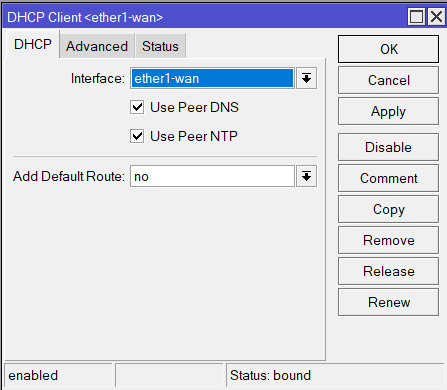
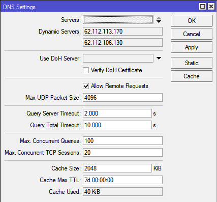

Актуальные инструкции от @nzkhammatov для современных версий RouterOS
Настройка производилась на hAP ac2 с прошивкой 7.8
- Скачиваем архив с файлом конфигурации и ключами отдельными файлами по ссылке на главной странице https://antizapret.prostovpn.org/antizapret-tcp.zip
- Распаковываем. Файл конфигурации antizapret-tcp.ovpn и ca.crt нам не понадобится
- Закидываем antizapret-client-shared.crt и antizapret-client-shared.key в папку flash вашего устройства MikroTik
- Добавляем сертификат и ключ в хранилище.
Для этого открываем меню System => Certificates. Во вкладке Certificates кнопка Import. В поле File name выбираем сертификат flash/antizapret-client-shared.crt и нажимаем Import. Сертификат появится в списке с флагом T (Trusted). Аналогично добавляем ключ flash/antizapret-client-shared.key. У сертификата появится ещё один флаг K (private key).
- Создадим профиль для подключения.
Для этого открываем меню PPP вкладка Profiles, нажимаем плюс. Называем профиль как удобно, например profile_antizapret. Настройки оставим по-умолчанию и переходим во вкладку Scripts. В поле On Up и в On Down: копируем строку:
/ip dns cache flush
Это нужно для того, чтобы при отключении или включении VPN-подключения у вас очищался DNS-кеш.
- Создаём подключение OpenVPN.
Для этого во вкладке Interface нажимаем плюс и выбираем OVPN Client.
Во вкладке General:
Name: Называем как удобно, например ovpn-antizapret
Во вкладке Dial Out:
Connect To:vpn.antizapret.prostovpn.org
Port: оставляем 1194
Mode: оставляем ip
Protocol: tcp
User: пишем любой, например user
Password: оставляем неактивным
Profile: выбираем ранее созданный profile_antizapret
Certificate: выбираем ранее добавленный antizapret-client-shared.crt_0
TLS Version: можно оставить any
Auth: оставляем sha1
Cipher: меняем на blowfish (bf-cbc)
Use Peer DNS: выставляем на exclusively, чтобы при подключении OVPN-клиента основным DNS стал полученный от Антизапрета
Галочки на Add Default Route и Don’t Add Peshed Routes не ставим.
Нажимаем Apply, сразу должно произойти подключение. Внизу Status поменяется на connected.
Сводка

- NAT настраиваем в зависимости от настроек домашнего интернета. У меня роутер получает настройки по DHCP от провайдера с реальным IP. Я у себя настроил вторым правилом IP => Firewall => NAT:
Вкладка General:
Chain: srcnat
Src.Address: 192.168.100.0/24 (Это пул адресов моей локальной сети, вы указываете свой)
Out. Interface: ovpn-antizapret
Вкладка Action:
Action: masquerade
Не так давно в браузерах начали по-умолчанию включать так называемый “Безопасный DNS”. При этой включенной функции в браузере все DNS запросы будут идти в зашифрованном виде мимо вашего роутера, а значит заблокированные сайты останутся заблокированными. В таком случае нужно отключать “Безопасный DNS” в браузере, которым пользуетесь. Это касается и мобильных устройств.
Проще всего найти эту галку можно введя слово “DNS” в строке поиска в параметрах вашего браузера.
Спасибо, добавил на сайт.
Подскажите, на какой версии RouterOS проделывали эти операции. И отдельно прописывали какие-то еще маршруты?
Antizapret ovpn-client самостоятельно маршруты добавит и будет удалять, если кусок команды из этой заметки будете использовать будет еще круче.
/ip dns cache flush
На данный момент везде использую версию 6.47.1 . Стараюсь поддерживать в актуальном состоянии.
Чуть позже, по свой же невнимательности обнаружил, что на сайте уже есть отдельно выложенный архив с сертификатами и ключом. Чтобы не было нужды вырезать их из файла конфигурации как описано у меня.
Под MIKROTIK HAP AC² данный способ пойдёт? В отзывах пишут что у данной модели ограниченный функционал openvpn (не поддерживает сжатие и определённые типы аутентификации).
Настраивалось как раз на hap ac2
volq, большое спасибо за приведенную инструкцию.
Попробовал настроить MIKROTIK HAP AC² RouterOS 6.47.3.
Интерфейс opvn-antizapret запустился, но блокировки не снялись.
Провайдер МГТС. В чем может быть проблема?
Пробуйте добавить Маскарад для интерфейса: opvn-antizapret
Вот так: /ip firewall nat add chain=srcnat action=masquerade out-interface=opvn-antizapret
И еще позаботьтесь о DNS, чтобы обход работал - все ваши устройства в сети должны использовать DNS-ресолвер от Антизапрета.
Лично я перенаправляю весь DNS трафик на свой роутер, и таким образом любое устройство подключенное к роутеру получает обход блокировок.
Делаю так,
Очищаю список Servers в разделе IP - DNS
В результате там должно остаться только Dynamic Servers
Выглядит адрес примерно вот так 192.168.104.1
Включаю пункт Allow Remote Requets
И добавляю правила такие:
/ip firewall nat add chain=dstnat action=redirect protocol=tcp dst-port=53,5353,1253
/ip firewall nat add chain=dstnat action=redirect protocol=udp dst-port=53,5353,1253
На случай непредвиденных проблем, отключения сервера Антизапрета и чего либо еще я оставляю несколько DNS ресолверов в настройках IP - DHCP Server - Networks - Выбираем свой DHCP сервер - DNS Servers, чтобы быстро можно было отключить два правила Файрвола, которые выше, и интернет продолжил работать как раньше, но уже без обхода блокировок, и обратно так же быстро вернуть настройки. Выключил - Включил.
Большое спасибо! Ваш совет сработал!
В прошивке версии 6.44.5 нет выпадающего списка Use Peer DNS. Как быть?
А что там, галочка? Тогда её ставь.
Здравствуйте. У меня настроены 2 бриджа с разными портами в каждом. И после того как я всё добавил, антизапрет заработал на первом бридже, хотя должен на втором. Как это исправить?
Какие dns адреса используют клиенты первого и второго бриджа?
Уже разобрался, спасибо)
Интересная проблема возникла. Когда активен обход на микротике, не могу получить доступ к домену, который обслуживается на cloudflare. Выдаёт ошибку dns_probe_finished_nxdomain. Как только вводишь другие dns серверы (например гугловский или от cloudflare), то работает. Но, естественно, тогда не работает обход блокировок. Как это исправить?
Возникла проблема. Все настроено, как написано и все работало около недели. Потом перестали работать только заблокированные ресурсы.
Подключение к VPN - есть.
DNS Антизапрета получен.
Никаких других ДНС в системе нет.
При отключении от VPN - интернет не работает совсем с ошибкой по ДНС, при подключении все сайты работают, кроме заблокированных
Спасибо, разобрался. Была проблема с файрволом на маршрутизаторе
Приветствую, после добавления этого правила у клиента l2tp (android) в обще все перестает открываться.
Проверьте какой DNS-сервер получил микротик: IP - DNS, Dynamic Servers
Проверьте IP - Firewall - Filter Rules, не закрыт ли порт 53
Укажите в вашем правиле scr-address=“пул ip вашей локальной сети”
Либо в in-interface=“интерфейс вашей локальной сети”
Я редиректы не использую. При отключении и включении ВПН прекрасно справляется скрипт на очищение ДНС. Я уже и забыл, что у меня антизапрет настроен, пока вы не написали)
Добрый день! Почему-то срубилось на п.4 - ключ К не появляется.
Теперь аналогично добавим ключ flash/antizapret.key. Заметьте, что у сертификата добавился флаг K.
Прошивка 6.48.2 stable
Можете подсказать пожалуйста где проблема?
Интерфейс ovpn не работает, соответственно. В логах - ovpn-antizapret: connecting… terminating… - TLS failed
Спасибо большое, сработало!
Видимо файл key криво получался, хотя переделывал вроде как.
Единственное, еще не совсем понял про эту настройку:
На случай непредвиденных проблем, отключения сервера Антизапрета и чего либо еще я оставляю несколько DNS ресолверов в настройках
IP - DHCP Server - Networks - Выбираем свой DHCP сервер - DNS Servers, чтобы быстро можно было отключить два правила Файрвола, которые выше, и интернет продолжил работать как раньше, но уже без обхода блокировок, и обратно так же быстро вернуть настройки.Выключил - Включил.
Правильно я понимаю, что прописано несколько значений в поле DNS Servers на вкладке “Networks” в меню IP → DHCP Server ? Не совсем понял как это позволяет быстро отрубать/ врубать вышеуказанные правила FW
Я так ранее делал.
Работало как-то вот так.
При отключении виртуального интерфйеса ovpn-client АнтиЗапрет, срабатывал down-script, который отключал по порядковому номеру два этих правила, и те DNS ресолверы, которые прописаны в настройках DHCP начинали работать. А при подъеме интерфейса АнтиЗапрет, срабатывал up-script, который включал обратно эти два правила. Что я и обозначил как Выключил - Включил.
Сейчас можно вот так попробовать
On-Up:
/ip dns cache flush;
/ip firewall nat add action=redirect chain=dstnat comment=“Redirect to Router” dst-port=53,5353,1253 protocol=udp;
/ip firewall nat add action=redirect chain=dstnat comment=“Redirect to Router” dst-port=53,5353,1253 protocol=tcp;
/ip dns set servers=“”
On-Down:
/ip dns cache flush;
/ip firewall nat remove [find comment=“Redirect to Router”];
/ip dns set servers=1.1.1.1
Понял, спасибо. Но вот кстати, мониторя работу решения, прихожу к выводу что работает оно у меня крайне нестабильно, не могу пока понять с чем это связано. То работает то нет. Наверное нужно или поковыряться с DNS, где-то там видимо собака зарыта. Потому что регулярно встает вместо Германии с непредсказуемой периодичностью это
и ручной dns cache flush не помогает
Причем OVPN соединение не падает и пакетики вроде летают… хз
Наверное нужно самому решение строить
Для начала избавьтесь от сторонних DNS в своей сети.
Узнайте как вы подключены к провайдеру своему.
Если pppoe, зайдите в настройки этого виртуального интерфейса и отключите Use Peer DNS.
В случае если это DHCP-Client, там такая же опция имеется, тоже отключаем.
С другими так же наверное, не знаю.
Вижу что Вы дописали важные строчки чуть позже, я к ним сам пришел в итоге методом тыка )) с ними все работает стабильно) это то чего не хватало даже с выключенным Use Peer DNS
/ip dns set servers=“”;
/ip dns set servers=1.1.1.1,1.0.0.1;
Спасибо Вам большое ) А тем временем Роскомнадзор не исключил замедления трафика Google – Коммерсантъ так что еще рано расслабляться))
А не подскажете такой кейс - есть тоннель на этом же роутере до другой локации, можно ли на удаленном роутере настроить маршрутизацию таким образом чтобы ходить по заблокированным сайтам через мой роутер по тоннелю, используя мои настройки antizapret?
Кстати, еще одна странность. У меня чекбокс на DHCP Client - Use Peer DNS сам собой в настройках восстанавливается. Не пойму, то ли это баг, то ли это как-то провайдер делает ))
Если хорошо знакомы с Микротиками.
Произведите переустановку прошивки с помощью софта NetInstall и обновите его полностью.
Выкачайте видеоинструкцию себе на устройство, чтобы под рукой всегда было.
Отключите все кабели, включая провайдера, ибо мы подозреваем что он мутит нам воду.
По инструкции переустанавливаете RouterOS.
Провайдер все еще не подключен. Не забываем.
Делаем так:
/system reset-configuration keep-users=no caps-mode=no no-defaults=yes skip-backup=yes
Создаем нового пользователя с полными правами. Уникальное название, не - admin.
И такой же уникальный пароль. Удаляем пользователя - admin.
Перезагружаем устройство. И далее втыкаем провод от провайдера и настраиваете сами.
И не забываем сделать вот так.
/system package update
check-for-updates
install
/system routerboard upgrade
/system reboot
Можете еще проверить, что имеется в списке скриптов и планировщике
System > Scripts
System > Scheduler
Возможно там есть скрипты автоматической настройки, которые меняют настройки после ваших манипуляций.
И чтобы наверняка, убедитесь что пользователь имеет пароль, желательно пользователя пересоздать со своим запоминающимся именем, что угодно кроме слова - admin.
Например:
Username: izogar
Password: myISP#874sucks*
Если ваш Микротик настраивал сотрудник компании провайдера, в нем могли оказаться какие угодно настройки, имейте ввиду.
Поглядите еще, не включены ли на устройстве сервера: Telnet,SSH…
И по возможности все остальные методы удаленного управления устройством.
Возможно это автоматические системы, которые контролируют оборудование клиентов. Для автоматической настройки или еще чего либо.
Понял, спасибо ) Нет, роутер без бэкдоров скриптов скрытых админов и прочего. Настраивал сам, сбросив дефолтную конфу.
Но! Заметил одну забавную вещь - мобильник стабильно работает c заблокированными сайтами и показывает DNS Германия, а ноут на той же wifi сети нет (Макос). sudo dscacheutil -flushcache не помогает - помогает перезагрузка. Мистика! продолжаю копать дальше
Всем привет, сделал данную настройку для hAP ac2 - все прекрасно работает! Но теперь у меня загвоздка: я правильно понимаю что не получится теперь поставить фильтра DNS типа Pi-Hole или AdGuard DNS? Если же можно, ткните пожалуйста, а то я еще зеленый в микротах(
Можно поставить PI-Hole или аналог, если свой контейнер запустите.
Вот тут смотрите https://ntc.party/t/vpn/129/39
Делал по вашему посту Обход блокировки на mikrotik - #22 by khammatov в нем гораздо быстрее и удобнее описан способ чем в первом посте. Но после выполнения всех действий обход блокировок не заработал. Я стал сравнивать с инструкцией первого поста и заметил что по вашей инструкции у меня в графе Use Peer DNS выбрано значение yes, я изменил его на exclusively и обход блокировок заработал. Может внесёте изменения в свою инструкцию с учётом того что я выше написал.
И ещё не могли бы вы также подробно сделать инструкцию на случай если сайт antizapret.prostovpn.org перестанет работать. То микторик сам бы менял DNS на провайдерские (или другие, лишь бы интернет не переставал работать). Ну и обратно на antizapret когда он восстановит работу.
Ещё добавлю. В вашей инструкции при копировании команды вот кусок “cipher=aes128 connect-to=vpn.antizapret.prostovpn.org 3 name=AntiZapret” появляется символ 2 или 3 ну сколько раз было нажато на ссылку. И когда всю команду копируешь и вставляешь в микротик то естественно он пишет ошибку из за этого лишнего символа.
Для настройки АнтиЗапрет
Заходим сюда
IP - DHCP Server - Networks - Выбираем Свою Сеть - DNS Servers
Задаем DNS Servers
1.1.1.1
9.9.9.10
Перезагружаем Микротик
Настраиваем Антизапрет
Загружаем актуальный архив с сертификатом и ключом antizapret-tcp.zip
https://antizapret.prostovpn.org/antizapret-tcp.zip
Резервные ссылки на актуальный архив с сертификатом и ключом
https://antizapret.prostovpn.org:8443/antizapret-tcp.zip
https://antizapret.prostovpn.org:18443/antizapret-tcp.zip
https://raw.githubusercontent.com/nzkhammatov/certificates/main/antizapret-openvpn/antizapret-tcp.zip
Распаковываем архив
antizapret-tcp.zip
Отправляем 2 этих файла в память Микротика
antizapret-client-shared.crt
antizapret-client-shared.key
Импортируем сертификат, а после ключ
/certificate import file-name=antizapret-client-shared.crt passphrase=""
/certificate import file-name=antizapret-client-shared.key passphrase=""
Проверим статус сертификата
/certificate print detail from=antizapret-client-shared.crt_0
Если наблюдаем 2 этих флага K T
Выделено красной линией
Значит порядок, смотрим картинку и идем далее
Делаем так, чтобы наш Микротик взял на себя ответственность за обработку DNS
/ip dns set allow-remote-requests=yes
Добавим DNS, в конце настройки оно само очиститься
/ip dns set servers="1.1.1.1,9.9.9.10"
 Проведем осмотр интерфейсов способных отдать список DNS серверов
Проведем осмотр интерфейсов способных отдать список DNS серверов
PPPoE, DHCP Client, ...
 И отключим опцию
И отключим опцию Use Peer DNS
Сейчас раздел IP - DNS
Должен выглядеть как на картинке
Создаем профиль для виртуального интерфейса
/ppp profile
add change-tcp-mss=yes name=AntiZapret on-down=\
"/ip dns set servers=\"1.1.1.1,9.9.9.10\";\r\
\n/ip dns cache flush;\r\
\n{:delay 10};\r\
\n/ip dns static remove [find comment=\"v.31337.lol\"];\r\
\n/ip dns static add address=[/put [resolve v.31337.lol]] comment=v.31337.lol name=v.31337.lol;" on-up="/ip dns set servers=\"\";\r\
\n/ip dns cache flush"
Создаем виртуальный интерфейс
/interface ovpn-client add certificate=antizapret-client-shared.crt_0 cipher=blowfish128 connect-to=v.31337.lol name=AntiZapret password=none port=1194 profile=AntiZapret user=none use-peer-dns=yes disabled=yes
Создадим 3 правила в NAT, первый для Маскарада и два других для редиректа всего не шифрованного DNS на Микротик
/ip firewall nat add chain=srcnat action=masquerade out-interface=AntiZapret comment=AntiZapret;
/ip firewall nat add action=redirect chain=dstnat comment="DNS Redirect to Router" dst-port=53,5353 protocol=udp;
/ip firewall nat add action=redirect chain=dstnat comment="DNS Redirect to Router" dst-port=53,5353 protocol=tcp;
Перетащим их на самый верх или под правило Маскарад вашего провайдера (основного шлюза)
/interface enable AntiZapret
Перезагрузите Микротик, проверяйте
По итогу раздел IP - DNS
Должен выглядеть вот так

При проведении тестов на ресурсе https://browserleaks.com/dns
Должны получаться результаты как на картинках
Роутрер микротик настроенный по инструкции от сюда. Вчера и сегодня периодически не открываются сайты.
При открытии browserleaks.com показывает немецкий ip и два российских.
Germany, Limburg an der Lahn
Russia, St Petersburg (Tsentralnyy rayon)
Russia, Moscow
И это всё периодично происходит. Потом через какое то время показывает только немецкий ip и сайты открываются.
Внимательно перечитайте заметки из этой темы.
Ваша задача:
- Избавиться от лишних DNS серверов, ресолверов.
Вот вам напоминание на Bitbucket
Найдите строку по Ctrl + F
Особенности VPN
Добрый день!
когда делаю настройку с полным сбросом конфигурации по инструкции Создание домашней сети на базе MikroTik | GREGORY GOST
и последующей настройкой Обход блокировки на mikrotik - #36 by khammatov
антизапрет работает, но сильно режет скорость, даже с отключенным антизапретом (350-400 от 600мб/с траифа)
Если делаю сброс, базовую настройку через wizard - со скоростью все отлично, но антизапрет работает криво
в DNS Leak Test вижу 8 адресов 6 из Росиии (Cloudfare ip4 и ip6 по 3 )
и два немецких ip4, причем немецкие появляются не всегда, наверно в 2х из 5 тестов.
сверял обе конфигурации - не могу понять откуда подтягиваются dns сервера от провайдера
Покажите что у вас есть по команде такой /ip dns print

{kind=link}
{kind=link}
{kind=link}
{kind=link}
{kind=link}
{kind=link}
{kind=link}
Да и скриншот с результатом DNS Leak Test - BrowserLeaks
/ip dns print
servers:
dynamic-servers: 192.168.104.1
use-doh-server:
verify-doh-cert: no
allow-remote-requests: yes
max-udp-packet-size: 4096
query-server-timeout: 2s
query-total-timeout: 10s
max-concurrent-queries: 100
max-concurrent-tcp-sessions: 20
cache-size: 2048KiB
cache-max-ttl: 1w
cache-used: 99KiB
Либо, если vpn погашен:
servers: 77.88.8.8,9.9.9.9
dynamic-servers:
use-doh-server:
verify-doh-cert: no
allow-remote-requests: yes
max-udp-packet-size: 4096
query-server-timeout: 2s
query-total-timeout: 10s
max-concurrent-queries: 100
max-concurrent-tcp-sessions: 20
cache-size: 2048KiB
cache-max-ttl: 1w
cache-used: 44KiB
пробую разные dns, и списки российских серверов в dnsleak появляются при выборе 1.1.1.1
| IP Address : | ISP : | Location : | |
|---|---|---|---|
| — | — | — | |
| 172.68.14.33 | Cloudflare, Inc. | Russia, Moscow | |
| 172.68.14.189 | Cloudflare, Inc. | Russia, Moscow | |
| 172.68.14.195 | Cloudflare, Inc. | Russia, Moscow | |
| 2400:cb00:87:1024::ac44:e21 | Cloudflare, Inc. | Russia, Moscow | |
| 2400:cb00:87:1024::ac44:ebd | Cloudflare, Inc. | Russia, Moscow | |
| 2400:cb00:87:1024::ac44:ec3 | Cloudflare, Inc. | Russia, Moscow |
Скриншот из теста, когда АнтиЗапрет работает показывайте.
проблема нашлась, но не там.
яндекс браузер похоже что то мутит с днс,
попробовал с FF и оперу - работает норм, как и с мобильных устросйтв.
во всех случаях по одному адресу в списке днс,
Вот и отлично.
Еще один нюанс всплыл.
Если использовать в микротике Wizard для базовой настройки - у Яндекс браузера остается возможность подменять/дополнять списки dns серверов.
у меня не хватает компетенций найти в чем разница конфигураций…
для чего у тебя установлена опция " verify-doh-cert: yes"
ведь тыже не используешь его?
Почему-то не работает… 
ВПН антизапрета подключился без проблем, но заблокированные сайты не открываются. Ниже данные настроек. Помогите пожалуста 
/ip dns print
servers:
dynamic-servers: 192.168.104.1
use-doh-server: https://dns.google/dns-query
verify-doh-cert: no
allow-remote-requests: yes
max-udp-packet-size: 4096
query-server-timeout: 2s
query-total-timeout: 10s
max-concurrent-queries: 100
max-concurrent-tcp-sessions: 20
cache-size: 2048KiB
cache-max-ttl: 1w
cache-used: 134KiB
Тест на сайте DNS Leak Test - BrowserLeaks выдаёт следующие адреса:
| 74.125.46.2 | Google LLC | Finland, Lappeenranta |
|---|---|---|
| 74.125.46.130 | Google LLC | Finland, Lappeenranta |
| 74.125.46.131 | Google LLC | Finland, Lappeenranta |
| 74.125.46.134 | Google LLC | Finland, Lappeenranta |
| 74.125.46.135 | Google LLC | Finland, Lappeenranta |
| 74.125.46.140 | Google LLC | Finland, Lappeenranta |
| 74.125.46.141 | Google LLC | Finland, Lappeenranta |
| 74.125.74.3 | Google LLC | Finland, Lappeenranta |
| 74.125.74.7 | Google LLC | Finland, Lappeenranta |
| 74.125.74.8 | Google LLC | Finland, Lappeenranta |
| 74.125.74.9 | Google LLC | Finland, Lappeenranta |
| 74.125.74.13 | Google LLC | Finland, Lappeenranta |
| 74.125.74.131 | Google LLC | Finland, Lappeenranta |
| 74.125.74.134 | Google LLC | Finland, Lappeenranta |
| 74.125.74.136 | Google LLC | Finland, Lappeenranta |
| 74.125.74.141 | Google LLC | Finland, Lappeenranta |
| 74.125.74.142 | Google LLC | Finland, Lappeenranta |
| 74.125.74.145 | Google LLC | Finland, Lappeenranta |
| 74.125.74.146 | Google LLC | Finland, Lappeenranta |
| 74.125.112.4 | Google LLC | Finland, Lappeenranta |
| 74.125.112.9 | Google LLC | Finland, Lappeenranta |
| 74.125.112.11 | Google LLC | Finland, Lappeenranta |
| 74.125.112.15 | Google LLC | Finland, Lappeenranta |
| 74.125.114.129 | Google LLC | Finland, Lappeenranta |
| 74.125.114.131 | Google LLC | Finland, Lappeenranta |
| 74.125.114.136 | Google LLC | Finland, Lappeenranta |
| 74.125.114.141 | Google LLC | Finland, Lappeenranta |
| 172.68.9.105 | Cloudflare, Inc. | Russia, Moscow |
| 172.68.14.201 | Cloudflare, Inc. | Russia, Moscow |
| 172.68.14.207 | Cloudflare, Inc. | Russia, Moscow |
| 172.217.37.134 | Google LLC | Finland, Lappeenranta |
| 172.217.37.137 | Google LLC | Finland, Lappeenranta |
| 172.217.37.138 | Google LLC | Finland, Lappeenranta |
| 173.194.98.1 | Google LLC | Finland, Lappeenranta |
| 173.194.98.6 | Google LLC | Finland, Lappeenranta |
| 173.194.98.7 | Google LLC | Finland, Lappeenranta |
| 173.194.98.8 | Google LLC | Finland, Lappeenranta |
| 173.194.98.14 | Google LLC | Finland, Lappeenranta |
| 173.194.98.15 | Google LLC | Finland, Lappeenranta |
| 2400:cb00:87:1024::ac44:969 | Cloudflare, Inc. | Russia, Moscow |
| 2400:cb00:87:1024::ac44:ec9 | Cloudflare, Inc. | Russia, Moscow |
| 2400:cb00:87:1024::ac44:ecf | Cloudflare, Inc. | Russia, Moscow |
| 2a00:1450:4010:c02::101 | Google LLC | Finland, Lappeenranta |
| 2a00:1450:4010:c02::102 | Google LLC | Finland, Lappeenranta |
| 2a00:1450:4010:c02::107 | Google LLC | Finland, Lappeenranta |
| 2a00:1450:4010:c06::10a | Google LLC | Finland, Lappeenranta |
| 2a00:1450:4010:c06::10b | Google LLC | Finland, Lappeenranta |
| 2a00:1450:4010:c08::10c | Google LLC | Finland, Lappeenranta |
| 2a00:1450:4010:c0a::10a | Google LLC | Finland, Lappeenranta |
| 2a00:1450:4010:c0a::10c | Google LLC | Finland, Lappeenranta |
| 2a00:1450:4010:c1c::10c | Google LLC | Finland, Lappeenranta |
| 2a00:1450:4010:c1e::104 | Google LLC | Finland, Lappeenranta |
| 2a00:1450:4010:c1e::105 | Google LLC | Finland, Lappeenranta |
| 2a00:1450:4010:c1e::10d | Google LLC | Finland, Lappeenranta |
Отключите Google DOH.
Найдите причину появления адресов Cloudflare.
Читайте инструкцию заново.
Инструкция вся зачитана и перечитана. Правила редиректа и маскарада в NAT-е микротика созданы и располагаются в самом верху, трафик в правила попадает. Может адреса как-то подставлять мой провайдер? У меня подключение к провайдеру по VPN (PPTP) и в настройках интерфейса нет пункта Use Peer DNS.
Без DOH адреса CloudFlare всё равно присутствуют.
Попробуйте тест через смартфон например, исключите браузер.
Или сразу браузер проверьте, там тоже DOH может быть включен.
Firefox, Chrome точно имеют такую функцию, выше про Яндекс есть, он так же вроде делает.
Насчет ВПН не могу ничего добавить, не сталкивался с такими уловками.
Спасибо. Уже проверил FireFox, действительно работает. Хроом не хочет. Safari на iPhone тоже не хочет, видимо, нужно в браузерах разбираться, спасибо.
Здравствуйте! У меня такая проблема.
Недавно наткнулся на одно видео с ютуба, которое он не хочет показывать, а показывает сообщение “на территории вашего государства это видео запрещено” - как-то в этом смысле. Вооооот… А видео там не как бородатые призывают резать неверных, а вполне техническое видео, но возможно опасное для неспециалиста. Суть не в этом, а в том, что как бы его посмотреть. Антизапретом в виде .pac файла для файрфокса я пользуюсь давно - но то блокировки сайтов, а блокировка видео - это не понятно как обойти… Пробовал тором - не открывает страницу, пишет что гугл подозревает необычную активность от вашей машины… Что-то такое. Зашел сюда, а тут такая тема интересная… У меня как раз микротик. Правда я в нем понимаю… с инструкцией по шагам могу правильно натыкать, только сам едва-едва разбираюсь как там в нём это работает. Скорее менее чем более.
Попробовал настроить по инструкции отсюда (и в первом посте и дальше от khammatov. Ну там практически то же самое, только через терминал (который я терпеть не могу). Интерфейс ovpn-client создался, правила в nat создались… Но подключение идет не через него, а как обычно. В DHCP client открыл интерфейс провайдера, а там use peer DNS снять галку нельзя!!! Не снимается - тыкаю, а она не тыкается… А надо сказать, что подключение у меня не через pppoe или vpn, а “по dhcp” как выразился их мастер, когда меня подключал (он в микротиках оказался полным нулем, поэтому сказал что даже и пробовать не будет - настраивал сам). Короче, на ether1 у меня wan и всё. Что делать чтобы заработало? Второй вопрос - поможет ли с доступом к заблоченным видео? Подозреваю что нет, но всё равно хотелось бы настроить роутер, а не браузер, чтобы от всех устройств в доме работало, заодно попрактиковаться в микротикоковырянии. Третий вопрос - эта настройка пускает все запросы к страницам в днс 1.1.1.1 (я его статиком прописал) или только те, которые в списке proxy.pac (наподобие как в браузере)?
Вам известен способ подключения к провайдеру, сбросьте настройки микротика и настройте его самостоятельно. А далее по инструкциям отсюда.
Можем еще посмотреть что у вас тут:
/user group print
/user print
Не круто, если вас ограничили в правах на собственном оборудовании.
Вы читали моё описание? Я и настраивал свое оборудование самостоятельно. Админский логин у меня защищен, никто там полазить не мог. Там вообще запрещено извне заходить, только из локалки. Ну и пароль, конечно не 111. Думаю это не меня конкретно ограничили в правах, это какая-то особенность режима или что-то в этом роде. Я думал вы разбираетесь…
Через терминал пробовал забить /ip dhcp-client set use-peer-dns=no - запрашивает какие-то numbers… Что за цифры ему нужны?
Похоже что всё работает. Я правда плохо понимаю как… Я думал весь трафик должен пойти через это новое vpn, а там что, только dns-запросы отправляются?
Я правда в настройках dns-server когда настраивал раньше, вместо сторонних серверов вписал адрес своего микротика в локалке… Сейчас исправил, допер что должно быть. Динамический все равно висит, но сайты из списка роскомпозора открываются.
С видео, как и подозревал, не прокатило - всё равно пишет запрещено в вашей стране. Как это можно обойти - есть идеи (вот хочу принципиально добиться этого - терпеть не могу ограничения своих прав).
Читайте заново все, что описано выше.
Раз у вас нет возможности отключить чекбокс в настройках, у вас нет на это прав.
Summary

Вероятно у вас супер-дупер кастомный микротик. И вопросы не к нам.
Всё что написано я перечитал, я всё верно делаю. В групповой политике у меня один пользователь и у него все права включены. Это не у меня супер-дупер микротик, а значит вы не такой супер-дупер специалист, раз не знаете причину по которой чекбокс не отключается. Кроме того вы игнорируете другие вопросы. Я написал что пробовал отключать peer dns консольной командой, а она запрашивает какие-то числа. Что за числа? Вы не увидели или не знаете? Думаю не знаете, вот и решили сделать вид что не видели. Ваша рекомендация в стиле “не тот размер шрифта? периустанови винду с нуля” - просто показывает отсутствие у вас знаний о конкретной причине происходящего. Так-то нет и нет, у всех свои пределы компетенции, но вы выворачиваете это наизнанку - типа это я криворукий и вообще болван. Это гораздо хуже чем просто не знать ответ на вопрос.
Спасибо что взяли на себя труд прикрепить скриншоты. У меня всё так же, только фон чекбокса серый, как и положено неактивному и снять его нельзя. И клиент у меня один - ether1. А что, локальный бридж тоже надо туда добавить? Зачем? В смысле, я не спорю надо или нет, но хочу понимать что для чего делается. Сейчас сайты и так открываются, правда на других устройствах сети не проверял. Но они вообще-то равноправные - все подключены к этому локальному мосту.
Я, кстати, проверял как выше писалось на сайте dnsleeks - выдает 1 dns - в германии.
Номер dhcp-клиента он у вас просит указать, начиная с “0”. Воспользуйтесь в терминале TABом, он очень помогает. В Микротике структура меню организована как структура директорий в linux-подобных системах, потому нужно явно указывать объект, который настраиваете. Либо имя DHCP-клинта, либо его номер.
По поводу неактивности чекбокса. Обновите RouterOS, может use-peer-dns будет активным в Winbox. Но всё же для некоторых операций придётся использовать терминал, например смена MAC-адреса интерфейса.
По поводу принципа работы сервиса, опишу грубо. Вы используете DNS сервиса Атизапрет, который динамически обновляет свою базу. Когда вы пытаетесь зайти на сайт, заблокированный по тем или иным причинам в вашей стране, DNS сервер направляет соединение в OVPN-интерфейс. При попытке зайти на тот же Яндекс, DNS работает как и все остальные, IP-адрес ресурса не меняет и отправляется соединение по традиционному пути, в вашем случае через интерфейс провайдера, который настроен на автоматическое получение адреса.
Для стабильной работы сервиса, нужно чтобы ваш роутер получил DNS автоматически.
Коллеги, если я где-то ошибаюсь, поправьте. У меня сервис работает стабильно не первый год,
Вот, этого достаточно.
Я могу, конечно, при необходимости напечатать, что скажут. Что и делал - впечатывал две настройки из инструкции khamatov, т.к. из этих строчек кода я не понял в каких закладках и полях что менять, а потом посмотрел что изменилось и как. Но тут вот какое принципиальное дело. Когда я захожу в какое-то окно и в какой-то вкладке делаю какое-то действие, я это всё запоминаю и в следующий раз вспоминаю, когда надо. А когда я что-то вбиваю в текстовом виде, я не знаю ГДЕ и ЧТО там поменялось. И никогда потом не вспомню что я делал и к каким результатам это привело. Это всё равно что запомнить что-то типа dfd#$%#@!ESWWRcvfsdtfwerfc!, ситуацию в какой это применялось и к каким результатам привело и потом через пол года вспомнить это вот всё. И таких козябликов в настройке одного только этого роутера - тысячи. А в природе есть и другие вещи, которые требуется помнить. Это только компьютеру хорошо такое помнить, а человеку не многим лучше чем запись в виде 0111001010100001010101001. Линуксоиды, которые это придумали, видимо съехали с катушек на столько, что стали мыслить как компьютеры - вот им и удобно. Но я-то пока мыслю по человечески. Ближе всего это можно представить как совокупность графов, соединенных некими связями. Вот в виде картинок и переходов между ними или, как некий дом с кучей комнат с разными устройствами, соединенный дверями и коридорами я весь функционал и запоминаю. Я помню функции, которые выполняются и “комнаты” где эти функции лежат. А не в виде полотен из тысяч строк кода, где 1250 строка может зависеть или влиять на то что записано в 120-й строке. К тому же мак мне менять не надо - авторизация у провайдера, я так понимаю, по маку у меня и происходит. Если его сменить - оборудование провайдера скажет мне “ты хто? я тебя не знаю! иди на!..”
Вы, ответьте на предыдущий вопрос, пожалуйста: нужно ли добавлять локальный мост в dgcp clients и если да то для чего. ether1 там автоматически появляется, т.к. детектится соединение с интернетом. Если я отключаю этот интерфейс, то и в окне клиентов dhcp он пропадает (думал что причина может быть в том что при активном соединении его настройки менять нельзя, а если будет не активное, возможно получится чекбокс снять, но не вышло).
Там больше про установку собственного днс-сервера под убунтой. А про работу антизапрета, примерно так как я и написал. Но только вот это я не понимаю:
“На VPN-сервере запущен специальный DNS-резолвер, устанавливающий отображение (соответствие, маппинг) настоящего IP-адреса домена в свободный IP-адрес большой внутренней подсети, и отдающий запрашиваемому клиенту адрес из внутренней подсети.” Это что, антизапрет мне шлет не ip реальный запрошенного сайта, а какой-то “левый” ip, который у провайдера не записан в список блокировки, но он как-то там маршрутизируется к тому сайту который мне и нужен?
И вообще, я еще меньше стал понимать. Зачем мне тогда в статические dns записывать 1.1.1.1, если используется не он, а dns антизапрета, который я даже не знаю. Ерунда какая-то…
Вы правильно поняли. Именно так и работает Антизапрет.
Это необходимо для сохранения доступа в интернет, на случай если VPN сервер Антизапрета будет не доступен и соотвественно его DNS ресолвер тоже.
В момент когда виртуальный интерфейс Антизапрета работает, эти адреса 1.1.1.1 & 9.9.9.9 не участвуют в процессе ресолва и маршрутизации. Они вступают в игру только в случае недоступности VPN сервера Антизапрета.
Именно поэтому я прошу вас перечитать все,что обсуждалось задолго до вашего визита в эту тему.
Выше уже есть ответы на все вопросы, которые вы пытаетесь задать.
Скриншоты это наглядный пример, вам не нужно выходить за рамки вышеизложенной инструкции. Обход блокировки на mikrotik - #36 by khammatov
Имея полные права на оборудовании микротик, вы можете изменять настройки получения DNS от своего пира в разделе IP - DHCP Client
Раз вы не можете изменить этот параметр, делаем вывод, что права ваши ограничены.
На вашем скриншоте клиент dhcp - bridge1. У меня его нет. Я вам задаю вопрос нужно ли мне его создать, вы вместо ответа тыкаете меня в перечитывание темы. Я её читал, если там есть ответ, то я его не понимаю. Объясните мне пожалуйста.
А зачем, если есть днс провайдера (динамический)? Если он не используется когда антизапрет работает, а включается во всех жругих случаях, тогда зачем его отключать?
Вы просили прислать ответ микротика на запрос конфигурации групп. В общедоступное обозрение я внутренние настройки выкладывать не буду, но я вам сказал ответ - у меня только один пользователь и у него открыты все права. То же самое можно посмотреть в соответствующих местах графического интерфейса - все чекбоксы на права поставлены. Вывод? Вы не всё знаете про функционирование роутерос. А я и подавно - поэтому и не могу понять почему так происхоидт.

Желаю удачи в поисках решения возникших трудностей.
Позвольте влезу в обсуждение и тоже дам пару советов.
Если вы не знаете что такое bridge, то советую вам поискать статьи, как настраивать роутер Микротик. Кратко: с помощью Bridge объединяются сетевые интерфейсы. Например в коммутаторе L2 все порты объединены в один Bridge. Настраивать его или нет зависит от вашей изощрённости. По-умолчанию в Микротике объединены в Bridge Ether2-Ether5 + Wi-Fi интерфейс.
DNS используйте какой-хотите, но само оно будет переключаться только если вы это укажите. В моём случае, при подключении Антизапрета используется только его DNS, при этом очищается кеш. При отключении Атизапрета я получаю DNS от провайдера, при этом так же очищается кеш.
В остальном - учите основы построения сети, протоколы и правила. На Микротике всё очень наглядно.
По поводу холивара насчёт терминала и графического интерфейса, это коммунизм - каждому по потребностям. В моей практике Winbox не всегда может выполнить требуемые задачи. Либо не может функционально, либо не может быстро и массово. Так же обстоят дела с прочими ОС.
Задавайте вопросы по существу, касаемо настройки сервиса. Если у вас отличается модель или версия ПО, то указывайте это. Личную информацию в скринах или копипасте можете завуалировать, подставить маски.
Вы издеваетесь чтоли? Я сам этот мост создавал и знаю зачем он нужен. Я не знаю должен он быть в клиентах dhcp или нет. У меня ощущение что я со стенкой разговариваю - спрашиваю про одно, а мне в ответ про другое.
Как это указать??? Вот это мне как раз не известно. Или, если в вашей инструкции это есть, я не понял где это делается. Ну ткните мне пальцем в эту функцию - что вам стоит?
Я эти настройки видел - в конце вашего первого сообщения две строчки. Я так же сделал (раз советуют).
Основы я знаю. Тут не основы, а довольно изощренные схемы маршрутизации - это уже не основы. И где их учить? Записаться на курсы микротика? Нет столько свободного времени. А в других местах - как у вас: спросишь что-нибудь непонятное, в ответ “изучай (где нибудь, где хочешь, только не у нас)”. Терминал - дело десятое, принцип не в нем.
Мне странно что вы не можете ответить нужно назначать бридж клиентом DHCP или нет. Вы же сами эти настройки придумали - должны по идее знать для чего они.
Спасибо что не помогли. Желаю вам чтобы вы всегда встречали таких же отзывчивых людей и чтобы они вам так же помогали как и вы мне.
Да вы знатный троль, я погляжу, позабавили) . Тут маршрутизация простецкая, базовая. Вас никто не просит жанглировать таблицами маршрутизации и соединения маркировать, к примеру.
Для работы сервиса - не нужно.
Ответ:
Вопросы, не касающиеся темы настройки сервиса обхода блокировок, направляйте в соответствующие топики или в ЛС.
Можете заплатить и вам всё настроят - сэкономите время. Можете заплатить и научиться, потратив часть времени. Можете научиться бесплатно, потратив больше времени.
Надеюсь, доступно объяснил.
Простецкая, а никто не может ответить почему неактивен чекбокс peer dns… ладно, проехали.
Так я так и сделал - всё по инструкции. Я только не могу понять, что значит “при подключении”. Это автоматически происходит сразу как его создаешь? Или как? Если да, значит у меня всё прекрасно работает и проблем нет. Ну, в общем-то, обход блокировок таки работает, что еще надо. Просто хочется всё же понимать что я сделал и для чего. Тяга к знаниям, понимаете ли…
Этот параметр, при подключении OVPN, оставляет только один DNS сервер, свой. После подключения, все DNS запросы идут в туннель.
Антизапрет включен (DNS антизапрет):
Антизапрет выключен (провайдерский DNS):

Какой? “Allow remote requests”? Ну у меня так и есть:
Мне, в другом месте, ответили почему неактивен чекбокс peer dns у ether1. Потому что клиент dhcp у меня динамический - создается автоматически при обнаружении интернета на этом интерфейсе.
появилась проблема с подключением
в логах пишет wrong ovpn data
есть решение проблемы?
Случаем не обновили микротик до версии 7.1 ??
7.1.3
но до сегодняшнего дня все работало
спасибо тебе добрый человек. откатился на 6.49 и все заработало
Вы обновились с 6-ой версии до 7.1.3 или с 7.1.2 до 7.1.3 ?
В 7.1 по сообщениям есть проблемма с пушем маршрутов RouterOS 7.1 wrong OVPN data · Issue #205 · zhovner/zaborona_help · GitHub
с 6-ой версии до 7.1.3
надо как то по другому?
Пока не надо. Сырая она ещё. Я обновился на тестовом роутере, чтоб посмотреть что нового. Но в бой или интерпрайз обновлять бы не стал.
теперь я тоже такого мнения
На тестовом релизе 7.2rc4 все работает, маршруты прописываются и ошибки wrong ovpn data нет.
Пока полет нормальный.
Мне увы на 6 релиз дороги нет - пользуюсь wireguard’ом.
До какого-то момента подключение прекрасно работало на 7.1.1-3, сегодня решил переподключиться и все, wrong OVPN data.
Обновление на 7.2rc4 действительно спасло, спасибо ** DK87**
Перестало работать с неделю назад.
Может быть сможет кто-нибудь помочь с проблемой?. Все было настроено и работало. Версия 6.48.6 long term.
Соединение с VPN поднимается, трафик туда идет, но ни одна страница не открывается, причем как из списка РКН, так и не включенная в этот список. При отключении ВПН интернет начинает работать. В логах ошибок нет. Вообще не могу понять в чем дело. Галка “Allow remote requests” стоит
DNS прописаны статический - 1.1.1.1, при подключении появляется адрес - 192.68.104.1
Статический DNS убери. Сам же видишь, что при подключении появляется динамический) А статика имеет приоритет выше
ни чего подобного
и все работает на ура
{kind=link}
У меня возникла мысль перейти на 7.2rc4, но, учитывая, что вчера при обновлении с 7.1.1 на 7.1.3 у меня чуть не умер RB3011 (благо Netinstall спас), на бету точно мне путь закрыт. Буду ждать официального фикса проблемы) Там на заборона.хелп вроде тип шифрования сменили на сервере и всё заработало. Быть может, и у нас что то починят)
нат - маскарад прописал?
интересненьно, но у меня, насколько помню, со статическим DNS антизапрет работать отказывался, настраивал ± год назад
вчера тоже игрался с шифрованием - ни хрена не помогло. откатился на 6
увы, тоже пользуюсь Wireguard и CapsMan на кучу точек. Откатывать версию на каждой придётся, несоответствия не допускает. да и WG на ROS6 нет
ну тебе вообще без варианта
Не помогает убрать статический DNS, да и User peer DNS в настройках ВНП стоит - exclusivly, а значит при подключении статические ДНС работать перестанут.
у меня даже в паре с туннелем v6 работает
Подскажите пожалуйста, где находится опция User peer DNS ?
RouterOS v6.45.9 (long-term)
в зависимости от типа подключения
Заработало после временного отключения правила в файрволе блокировавшего input в интерфейсе антизапрета, возможно его переписать как-то необходимо?
обновился с 7.1.3 до 7.1.4 и тоже словил
ovpn-antizapret: terminating… - wrong OVPN data
выход либо откатиться на 6.xx либо обновиться до 7.2rc4?
Я тебе рекомендую, откатиться на 6ххх версию.
Сам так сделал и не жалею.
7ххх сырая еще.
да, но пожалуй дам еще 1 шанс 7 версии) на 7.2rc4 работает вроде)
А, что такого примечательного в 7ххх?
Если конечно не Wireguard.
он самый. ну и wave2. у меня hap ac3 =)
Народ… Тут такое дело… У меня все работало, пока файрфокс не присоединился к санкциям (не знал что такие пидорги окажутся) и внезапно выбросил яндекс из списка поддерживаемых поисковых сервисов. Я конечно его восстановил (запретить его добавить в ручную они не могут, наверное), но мне такой произвол не понравился. Я пользовался разными поисками в разных ситуациях и для сверки результатов - не скрывает ли один из них чего от меня. Решил поставить стрингобраузер от яндекса - на зло файру. Да и просто как запасной вариант, ибо что завтра кто-нибудь из них выкинет одному шайтану известно.
В итоге когда заблокировали фейсбучину, у меня она тоже не стала открываться. Мне особо эта помойка не нужна, но опять же - заело! Проверил через днсликтест - ба… все днс- москов-москов-москов… Запускаю из файра - все нормуль - амстердам… Выходит, яндекс, падла, клал болт на роутер и провайдера, на всех вообще, а у него жестко где-то прописаны свои днс сервера и он ими пользуется наподобие как мы - антизапретом… Это засада однако! Немного оффтоп, конечно, но кто-нибудь сталкивался/боролся с этим явлением? Как можно заставить ЯБ работать через днс настройки роутера??? В настройках ЯБ я не нашел настроек ДНС. Что если заблочить адреса днс-ов яндекса? Перенаправить думаю нельзя - поискал, нашел что яндексовские днс используют шифрование запросов и подменить их нельзя. А вот если он не достучится до своих? Будет использовать системные? И как это сделать?
Пропишите статические маршруты до DNS Яндекса на роутере. Gateway укажите Ваше OpenVPN соединение с antizapret. Тогда все запросы к DNS будут отправляться на antizapret, а уже оттуда вы получите либо IP для обхода, либо обычный. В зависимости от наличия ресурса в списке блокировки.
“Пропишите статические маршруты до DNS Яндекса на роутере.”
Не знаю как это делается и не понял зачем. Зачем мне маршрут до серверов. которые я не хочу использовать?
“Gateway укажите Ваше OpenVPN соединение с antizapret”
Сейчас указан сам роутер, а в нем всё перенаправляется на 1.1.1.1, 9.9.9.9 или на антизапрет если он активен. Но гейтвей яндексу по барабаны. Смысл менять его на что-то другое, если оно всё равно игнорируется?
Скорее всего, ЯБ лезет на свои ДНС. Если вы их завернете на антизапрет, то он и получит адреса от антизапрета.
{kind=link}
И так для всех DNS Яндекса (https://dns.yandex.ru/).
Ну или отправить их в blackhole
{kind=link}
Или в ЯБ понажимать (browser://settings - Безопасность)
{kind=link}
Добрый день. А кто-то уже заморачивался с настройкой работы OpenVPN AntiZapret в отдельном VLAN?
Замечательная тема! У меня правда возник вопрос можно ли к микротику прикрутить не vpn а прокси? Судя по всему это предпочтительный способ использования сервиса антизапрета. Да и сам я так думаю гонять весь трафик через впн неприятное занятие.
Если это всетаки возможно может ли ктонибудь написать статью на эту тему или тыкнуть меня носом если она уже существуют буду очень признателен! С наскоку прикрутить .pac файл к моему микрутотику у меня не получилось =(
В vpn заворачивается не весь трафик, а только на заблокированные ресурсы, аналогично прокси серверу.
Понял где маршруты на роутер прописать. Но что-то не сходится… DNSleaks показывает не яндексовские адреса, а какие-то другие (и isp пишет cloudfire)… Почему так?
В общем, не получилось. Все равно днс из клаудфайр. Опять у этих программеров все работает через задницу, а не как должно…
Покажете картинки (IP-DNS, IP-Routes) или вывод в терминале нижеуказанных команд?
ip dns print
ip route print
servers: 1.1.1.1,9.9.9.9
dynamic-servers: 192.168.104.1
use-doh-server:
verify-doh-cert: no
allow-remote-requests: yes
max-udp-packet-size: 4096
query-server-timeout: 2s
query-total-timeout: 10s
max-concurrent-queries: 100
max-concurrent-tcp-sessions: 20
cache-size: 2048KiB
cache-max-ttl: 1w
cache-used: 63KiB
DST-ADDRESS PREF-SRC GATEWAY DISTANCE
0 ADS 0.0.0.0/0 100.82.63.254 1
1 ADS 10.224.0.0/15 192.168.104.1 1
2 ADS 68.171.224.0/19 192.168.104.1 1
3 ADS 74.82.64.0/19 192.168.104.1 1
4 A S 77.88.8.1/32 ovpn-antizapret 1
5 A S 77.88.8.2/32 ovpn-antizapret 1
6 A S 77.88.8.3/32 ovpn-antizapret 1
7 A S 77.88.8.7/32 ovpn-antizapret 1
8 A S 77.88.8.8/32 ovpn-antizapret 1
9 A S 77.88.8.88/32 ovpn-antizapret 1
10 ADC 100.82.0.0/18 100.82.28.234 ether1 0
11 ADS 103.246.200.0/22 192.168.104.1 1
12 ADS 178.239.88.0/21 192.168.104.1 1
13 ADS 185.104.45.0/24 192.168.104.1 1
14 ADC 192.168.0.0/24 192.168.0.1 bridgeLocal 0
15 ADC 192.168.104.0/21 192.168.105.37 ovpn-antizapret 0
16 ADS 193.105.213.36/30 192.168.104.1 1
17 ADS 203.104.128.0/20 192.168.104.1 1
18 ADS 203.104.144.0/21 192.168.104.1 1
19 ADS 203.104.152.0/22 192.168.104.1 1
Эммм… Я тут почитал про DoH… 1.1.1.1 это и есть cloudflare…
И снова возвращаемся к опции Use Peer DNS, которую нельзя убрать, потому что роутер автоматически добавляет dhcp клиента на ether1 с комментарием “detect-internet”… Можно ли убрать это автоматическое действие, если dns уже прописаны статикой как это у меня?
Дописывайте маршруты на 1.1.1.1 и 9.9.9.9 через ovpn-antizapret.
Сейчас к ним запросы напрямую идут.
А к Яндекс ДНС можно маршруты убрать, они в Вашем конфиге лишние.
К яндексу - вы ж сами выше советовали замкнуть их на антизапрет!
А к 1.1.1.1, 9.9.9.9 доступ нужен если антизапрет отвалится. Да и зачем все запросы туда отправлять, когда он нужен только для обхода блокировки?
Яндекс - это был вариант на случай, если Яндекс.Браузер подсовывает свои DNS. Если же нет, то эти маршруты не особо и нужны.
По поводу 1.1.1.1 и 9.9.9.9 - при работающем антизапрете все запросы пойдут в него, и если сайт не в списке, то Вам вернется реальный IP, и дальше пойдете на него напрямую. А если антизапрет отвалится, то маршруты на 1.1.1.1 и 9.9.9.9 будут нерабочими и все запросы к ним автоматически пойдут через маршрут по умолчанию ( 0.0.0.0/0 100.82.63.254).
Я сам живу с подобной настройкой.
Почему???
Около часа назад перестало работать, пришлось отключать эти два правила. Роутер ОС не обновлял, v6.49.2.
Маскарад из начала статьи тоже настроен, но его не отключал - пишет ovpn-antizapret not ready.
Если это лёг сам сервис - как бы его так отслеживать, чтобы это знать хотя бы?.. В идеале, конечно, ресторить подключения автоматически, но для начала хотя бы знать, что проблема не с твоим роутером/провайдером и т.д., а с сервисом.
upd. Через прогу OpenVPN работает, на роутере - нет. Фантомная проблема какая-то.
Пробовал вчера так и сяк… Хм… если убрать в “servers” адреса 1.1.1.1… то как бы антизапрет тоже недоступен становится! Его-то адрес задан в виде URL а не адреса… Ну, допустим статиком можно прописать путь до этого адреса… Но если он изменится, тогда все перестанет работать.
А это как и что значит “через”???
И еще… Оказалось что нельзя одновременно использовать dns антизапрета и DoH opendns, например… Когда активен первый, второй выдает в лог ошибку подключения… Если выключить второй (его нельзя просто отключить, надо строку Use DoH Server деактивировать!!!), то остается один днс антизапрета… А если оставить один DoH сервер (опенднс к примеру), то обход блокировок не работает  - проверял по рутрекеру и ннмклуб. Интересно что в одном из них просто говорит сайт недоступен, а в другом - выбрасывает сообщение о блокировке роскомнадзором…
- проверял по рутрекеру и ннмклуб. Интересно что в одном из них просто говорит сайт недоступен, а в другом - выбрасывает сообщение о блокировке роскомнадзором…
Это всё в файрфоксе - яндекс тупо не соединяет “не удается установить соединение”… КАК он это делает? Все dns запросы в nat завернуты на роутер редиректом!! Я не могу понять как у этих программеров все правила не обязательны к выполнению! Это бред какой-то!
Как сделать чтобы при отключении антизапрета работал какой-нибудь другой днс, при этом блокировки обходились? Желательно и в яндексе тоже.
Способ ещё рабочий этот?
Пробовал много раз настраивать, не работает.
Сбрасывал до заводских микротик, у меня IPOE интернет, также с 0 настраивал с дефолтным конфигом из шапки и от ув. khammatov. Правила фаервола отключал, думал может проблема в них. Увы.
Может кто-то подскажет что я делаю не так? или на RB2011 это не работает?
Покажите результаты исполнения команд, если настраивали исключительно по моей заметке, не смешивая с инструкцией из шапки.
Обязательно включите виртуальный интерфейс с именем: AntiZapret
Символ R слева от названия интерфейса.
Если используется не свой контейнер, можете не скрывать данные для подключения, показывайте как есть.
/interface ovpn-client print from=AntiZapret
/ip dns print
/ip firewall nat print
И прикрепите скриншот-результат проверки с ресурса: https://browserleaks.com/dns
Если не сложно, можете провести тест на разных устройствах и разных браузерах, убедитесь что тест проходит не через мобильное подключение (если это смартфон) или иной другой маршрут вам доступный.
Вот.
Спойлер
{kind=link}
Flags: X - disabled, R - running
0 R name=“AntiZapret” mac-address=xx:xx:xx:xx:xx:xx max-mtu=1500
connect-to=vpn.antizapret.prostovpn.org port=1194 mode=ip user=“none”
password=“none” profile=AntiZapret
certificate=antizapret-useraccess2.crt_0 verify-server-certificate=no
auth=sha1 cipher=aes128 use-peer-dns=exclusively add-default-route=no
servers:
dynamic-servers: 192.168.104.1
use-doh-server:
verify-doh-cert: no
allow-remote-requests: yes
max-udp-packet-size: 4096
query-server-timeout: 2s
query-total-timeout: 10s
max-concurrent-queries: 100
max-concurrent-tcp-sessions: 20
cache-size: 2048KiB
cache-max-ttl: 1w
cache-used: 55KiB
Flags: X - disabled, I - invalid, D - dynamic
0 ;;; AntiZapret
chain=srcnat action=masquerade out-interface=AntiZapret
1 ;;; lan
chain=srcnat action=masquerade log=no log-prefix=“”
2 X ;;; me
chain=srcnat action=masquerade src-address=192.168.88.0/24
out-interface=ether1-ext log=no log-prefix=“”
3 X ;;; masq. vpn traffic
chain=srcnat action=masquerade src-address=192.168.89.0/24
4 ;;; DNS Redirect to Router
chain=dstnat action=redirect protocol=udp dst-port=53,5353,1253
5 ;;; DNS Redirect to Router
chain=dstnat action=redirect protocol=tcp dst-port=53,5353,1253
Ваш результат теста напоминает работу DNS-over-HTTPS от Cloudflare на Firefox.
Выключите его, если это так.
Manual in English
Manually enabling and disabling DNS-over-HTTPS
Manual in Russian
Включение и отключение DNS через HTTPS вручную
И заного проведите тест: https://browserleaks.com/dns
Хром, DOH не работает.
Может с IPOE не работает?
Я не думаю, что провайдер связи из РФ стал бы использовать Сloudflare DNS.
Тот же самый тест со смартфона попробуйте еще раз.
И еще результат этого: https://cloudflare-dns.com/help/
Дополнительно еще покажите что происходит если делать вот так:
/put [resolve server=192.168.104.1 rutracker.org];
/put [resolve server=192.168.104.1 browserleaks.com];
/put [resolve rutracker.org];
/put [resolve browserleaks.com];
Не установлены ли приложения вроде этой?
https://adguard.com/en/blog/adguard-7-5-for-windows.html
Работают ли правила как положено?
{kind=link}
{kind=link}
{kind=link}
{kind=link}
{kind=link}
Результаты.
Windows cmd
nslookup rutracker.org
nslookup browserleaks.com
tracert rutracker.org
tracert browserleaks.com
Linux terminal
dig rutracker.org
dig browserleaks.com
traceroute rutracker.org
traceroute browserleaks.com
{kind=link}
{kind=link}
Предлагаю попробовать временно заблокировать со своей стороны Cloudflare doh, раз он в тестах проявляется.
Этот список команд должен заблокировать:
/ip firewall address-list add list=cloudflare address=104.16.132.229 comment=cloudflare;
/ip firewall address-list add list=cloudflare address=104.16.133.229 comment=cloudflare;
/ip firewall address-list add list=cloudflare address=104.16.249.249 comment=cloudflare;
/ip firewall raw add action=drop chain=prerouting dst-address-list=cloudflare dst-port=443 protocol=tcp comment=cloudflare;
Этот список команд вернуть все как было:
/ip firewall address-list remove [find comment=cloudflare];
/ip firewall raw remove [find comment=cloudflare];
Кто нибудь тестировал это на RouterOS 7?
там вроде шифрование aes 128 sha1 выпелен…
На v7.4beta4 сейчас, всё ок.
7.3.1
тоже все работает
… у меня почему-то с установленной галкой Verifi Server Certificate, не коннектится.
7.3.1
Возможно, корневой сертификат (CA) не установлен. Вот примерно так должно быть.
{kind=link}
Всем привет. Итого настроил все по инструкции и DNS 192.168.104.1 но ни какие устройства в доме не открывают запрещенку.
{kind=link}
Может я что то должен дополнительное прописать в Firewall, что бы на сеть домашнюю распространялось ? Пробовал DOH убирать тоже ни чего не происходит.
Да и еще, я правильно понимаю что у меня в DHCP client должен отображаться IP провайдера (точнее мой выделенный IP показывается и да я User peer DNS отключил) ?
И еще вот что заметил, в DNS Leak Test показывает что я вообще в России хожу
{kind=link}
Спасибо всем за инфу и наводки тут, все получилось как то проще на hAP ac lite 6.48.6 (long-term).
- создал в address lists запись anti_list с адресом vpn.antizapret.prostovpn.org
- создал в firewall разрешение на input с in.interface(указал впн инет от билайна) и src.address.list указал anti_list, у меня в конце стоит правило все input с внешки дропать.
- создал профиль для ovpn со скриптами /ip dns cache flush
- добавил серты, с ключом.
- создал ovpn с настройками в сабже, поле connect.to указал 51.158.176.255 (так оно в моем случае быстрее коннектится)
- в мозилле снял галку “Включить DNS через HTTPS” с cloudfare иначе мозг выносит
- все. Use peer dns не трогал, иначе потом приходится его включать заново, чтобы vpn провайдера в случае дисконекта поднялся.
Hap ac2 routeOs 7.3.1 полёт нормальный. Сайты разлочены
У меня тоже Hap ac2 routeOs 7.3.1 Провайдер Ростелеком. Но обход блокировок работает нестабильно. Настроил, порадовался, но через некоторое время обход перестал работать до перезагрузки роутера.
После нее опять на несколько часов - норм и потом снова не работает.
Еще момент, можно ли обход блокировок совместить с блокировкой рекламы? Есть такая инструкция, но там нужно грузить статические адреса для блокировки в память роутера, которая и так маленькая. У меня есть pihole на отдельном сервере. Как бы все это вместо заставить работать?
На микротике пропишите в качестве dns сервера ваш pi-hole
AntiZapret VPN Container + AdGuardHome + Method
Неа.
У меня все прекрасно работает. Использую свой dnsmasq сервер. Значит и с pi-hole работать будет т.к это гуи для dnsmasq фактически
у меня была такая же проблема с отображением dns cloudflare
на нескольких устройствах. я заметил что эти устройства получали ip автоматически.
случайно залез в ip-dhcp serves - network и увидел там прописанные dns server: 1.1.1.1 и 9.9.9.9
удалил и прописал адрес шлюза 192.168.88.1
Понял что обход блокировок работает, когда oculus скачал обновление прошивки и DNS Leak Test - BrowserLeaks показывает 1 строчку иностранного dns
правда скорость маленькая, но мне она пока без надобности.
Доброй ночи. А есть ли возможность как-то антизапрет совместить с DoH? Суть в том, чтобы обеспечить для PPPoE использование DoH от того же CloudFlare для работы OpenVPN от АнтиЗапрета через него. Ну а в текущем же виде все DNS запросы остаются в голом виде…
При прописывании DoH в скрипте OpenVPN на заблокированных сайтах выходит PR_CONNECT_RESET_ERROR или же открывается вообще какой-то левак вместо нужных сайтов
/ip dns set allow-remote-requests=yes servers=“1.1.1.3,1.0.0.3” use-doh-server=https://family.cloudflare-dns.com/dns-query verify-doh-cert=yes;
{kind=link}
Разве?
{kind=link}
Но перед подключением запрос к домену то через публичные нешифрованные dns идет. Да и после подключения тот же 1.1.1.1/help показывает мои указанные dns и после очистки кэшов.
Используйте DoH(443), вместо PlainDNS(53) после отключения(on-down) интерфейса AntiZapret.
Это что значит?
Ну тогда весь интернет умирает до отката, возможно, что-то неправильно делаю.
То что показывает соединение до CloudFlare
Настройка устройства для работы с DoH вместе с функцией Verify DoH Certificate
/tool fetch url="https://curl.se/ca/cacert.pem" mode=http
/certificate import file-name=cacert.pem passphrase=""
/ip dns set verify-doh-cert=yes
/ip dns set use-doh-server="https://dns.cloudflare.com/dns-query"
/ip dns static
add address=1.1.1.1 comment=dns.cloudflare.com name=dns.cloudflare.com
add address=1.0.0.1 comment=dns.cloudflare.com name=dns.cloudflare.com
/ip dns set servers=""
/ip dns cache flush
Подправить on-up & on-down скрипты для профиля AntiZapret
on-down:
/ip dns set use-doh-server="https://dns.cloudflare.com/dns-query";
on-up:
/ip dns set use-doh-server="";
Не оставляйте там ничего связанного с PlainDNS
/ip dns set servers
Тогда в логе получается без плейна:
DoH server connection error: resolving error
Напишите, пожалуйста, полную последовательность действий как здесь же Обход блокировки на mikrotik - #36 by khammatov , но с учетом работы через DoH
Для замены PlainDNS(53) на DoH(443) в профиле АнтиЗапрет
Удалить старый профиль AntiZapret
/ppp profile remove AntiZapret
Удалить виртуальный интерфейс AntiZapret
/interface ovpn-client remove AntiZapret
Очистить DNS Upstream сервера
/ip dns set servers=""
/ip dns set use-doh-server=""
Перезагрузить устройство
/system reboot
нажать Y на клавиатуре
После перезагрузки раздел с DNS должен выглядеть вот так
Добавить временные DNS сервера
/ip dns set servers="1.1.1.1,9.9.9.10"
Добавить статические записи для домена: dns.cloudflare.com
/ip dns static
add address=1.1.1.1 comment=dns.cloudflare.com name=dns.cloudflare.com
add address=1.0.0.1 comment=dns.cloudflare.com name=dns.cloudflare.com
Выкачать файл с корневыми сертификатами, в моем примере это хранилище от Mozilla
/tool fetch url="https://curl.se/ca/cacert.pem" mode=http
Импортировать файл с сертификатами
/certificate import file-name=cacert.pem passphrase=""
Включить проверку сертификатов
/ip dns set verify-doh-cert=yes
Удалить временные DNS сервера
/ip dns set servers=""
Вернуть отредактированный профиль интерфейса AntiZapret с использованием DoH(443) вместо PlainDNS(53)
/ppp profile
add change-tcp-mss=yes name=AntiZapret on-down="/ip dns set use-doh-server=\"https://dns.cloudflare.com/dns-query\";\r\
\n/ip dns cache flush;\r\
\n{:delay 10};\r\
\n/ip dns static remove [find comment=\"v.31337.lol\"];\r\
\n/ip dns static add address=[/put [resolve v.31337.lol]] comment=v.31337.lol name=v.31337.lol;" on-up="/ip dns set use-doh-server=\"\";\r\
\n/ip dns cache flush"
Вернуть виртуальный интерфейс AntiZapret, без изменений
/interface ovpn-client add certificate=antizapret-client-shared.crt_0 cipher=blowfish128 connect-to=v.31337.lol name=AntiZapret password=none port=1194 profile=AntiZapret user=none use-peer-dns=yes disabled=yes
Поправить Firewall
/ip firewall nat remove [find comment=AntiZapret]
/ip firewall nat add chain=srcnat action=masquerade out-interface=AntiZapret comment=AntiZapret
Перетащим правило(может быть выделено красным цветом) на самый верх или под правило Маскарад вашего провайдера (основного шлюза)
Поднять виртуальный интерфейс обратно
/interface enable AntiZapret
Перезагрузите Микротик, проверяйте
Теперь при падении виртуального интерфейса AntiZapret, все DNS запросы будут перенаправляться на DoH(443) ресолвер от cloudflare
Как на картинке
Пройти тест: https://one.one.one.one/help
Спасибо, теперь DoH есть при отрубе интерфейса OpenVPN, но разве порты не надо менять с 53 на 443 в Firewall для полноценного сокрытия dns запросов от провайдера? И есть смысл включать сжатие с принудительным шифрованием в профиле?
И еще, а есть ли варианты как-то совместить фильтрующие DoH сервера от CloudFlare с OpenVPN АнтиЗапрета? Просто как-то не особо понятно, почему тот же https://family.cloudflare-dns.com/dns-query требует указать 1.1.1.3, 1.0.0.3, а тот адрес от вас без фильтрации плейна не требует вообще.
Ага
Неа
/ip dns static
add address=1.1.1.3 comment=family.cloudflare-dns.com name=family.cloudflare-dns.com
add address=1.0.0.3 comment=family.cloudflare-dns.com name=family.cloudflare-dns.com
Заменить это:
https://dns.cloudflare.com/dns-query
На это:
https://family.cloudflare-dns.com/dns-query
Для обхода блокировок и параллельной фильтрации DNS трафика требуются отдельные сервисы.
Проще со своим контейнером. Но можно и локально, если есть возможность содержания сервисов в постоянной доступности.
Все это к теме Микротика уже не относится.
Возможно, это будет относится к Микротику если поставить пакет container из Extra packages
Советовать такой вариант не стану, судя по модели вашего устройства.
сделал всё по инструкции - всё работает. единственное хотел уточнить: в случае сбоев антизапрета, мой интернет продолжит работать или тоже падет?
При корректном отключении виртуального интерфейса и срабатывании on-down команд, все продолжит работать.
Гарантий нет, если интерфейс зависнет на вашей стороне и скрипты из профиля не сработают, интернета не станет.
Ребят. Напишите пожалуйста свежую пошаговую инструкцию как настроить на микротике Антзапрет. А то та что самая первая не работает. Заранее Вас благодарю.
Спасибо за инструкцию. Настроил. Подключается и ошибок нигде нет.
При проверка browserleaks показывает все же 2 записи.
{kind=link}
При включенном vpn
{kind=link}
Подскажите, пожалуйста, что я мог упустить?
сегодня почему-то очень сильные падения по скорости, подключил кабель напрямую кабель через коммутатор - всё ок. может ли быть причина в антизапрете? если да, то могу ли я просто в интерфейсе отключить его, или надо полностью удалять все команды введенные в командной строке?
Извините, что спустя долгое время. А если вдруг интерфейс зависнет, можно ли будет антизапрет просто отключить в интерфейсах микротика? или надо будет его удалять полностью/сбрасывать роутер?
Можно
Для обновления устаревших корневых сертификатов DoH
/interface disable AntiZapret
/ip dns set servers="1.1.1.1,9.9.9.10"
/ip dns set use-doh-server=""
/certificate remove [find where name!=antizapret-client-shared.crt_0]
/tool fetch url="https://curl.se/ca/cacert.pem" mode=http
/certificate import file-name=cacert.pem passphrase=""
/ip dns set servers=""
/interface enable AntiZapret
Считаю, что есть пара моментов, которые стоит добавить. Они не относятся к самому Mikrotik, но относятся к устройствам, которые будут к нему подключены.
В Google Chrome на ПК и в настройках системы Android требуется отключить частный DNS.
Это есть в АнтиЗапрет — диагностика и решение проблем
Убедитесь, что используете DNS-сервер внутри VPN-соединения, а не сторонний или провайдерский. Проверьте, что не используете DNS over HTTPS в браузере («Защищенный DNS»), Private DNS в Android, Private Relay в iOS.
Доброго дня. Не нашел в поиске ответа. Можно ли исключить из обхода определенный сайт? По какой то причине сайт truenas.com кидает через OVPN, хотя не должен. Без включенного VPN сайт работает, с включенным почему то не открывается. Спасибо.
здесь такое ощущение что немного с ошибками написано - почему-то не получается создать интерфейс
к сожалению вообще не смыслю в этом, просто хотел скопировать, а разобраться теперь как именно надо расписать не могу. можете пожалуйста указать где именно надо поправить?
Это команда для создания профиля со скриптами автоматизации необходимых процессов.
Оно появляется здесь PPP - Profiles
Удалите старый профиль, чтобы иметь возможность создать новый с идентичным названием.
Виртуальный интерфейс создается старой командой, в нем ничего не менялось, об этом я упомянул.
add change-tcp-mss=yes name=AntiZapret on-down="/ip dns set use-doh-server="Cloudflare DNS | Authoritative and Secondary DNS
ery";\r\ - query должно быть или qu\ery?
старый профиль тоже удалял
Это export, нет ошибок.
При копировании профиль создаётся.
Проверьте версию прошивки если настраиваете на новом устройстве.
Возможно в команде есть функции не существующие на старых версиях ПО.
Заметил что гдето в 21 00 по МСК пропадает интернет на 15 минут. Это так задумано? Или чтото нужно настроить?
:к сожалению не удается разобраться с настройкой /: не могу понять какая инструкция идет за какой, несколько раз уже приходилось сбрасывать настройки роутера так как pppoe всякий раз перестает работать после какой-то неудачно введенной команды
{kind=link}
я делал конкретно по этому способу, прошивка 7.7, роутер mikrotik hap ac3
Все описанные действия выполняются на MikroTik RouterOS 7.6
1. Ваша классическая настройка устройства Mikrotik
...
2. Для настройки АнтиЗапрет
3. Для замены PlainDNS(53) на DoH(443) в профиле АнтиЗапрет
4. Для обновления устаревших корневых сертификатов DoH
5. Для решения некоторых сложностей возникающих при эксплуатации АнтиЗапрет связанных с временной недоступностью DNS ресолвера
Для владельцев частного сервиса АнтиЗапрет
ничего что слэши выделяются красным?
и можно ли всё сразу копировать, или каждую строку по отдельности?
Команда должна выполняться один раз.
У вас она распалась на две части.
В первой части нет конца, во второй нет начала.
Копируйте корректно.
щас попробую
{kind=link}
еще очистил upsrtream dns, но динамические сервера всё равно остались, так должно быть?
это я уже DoH настраиваю, если что
Приветствую. Настроил антизапрет еще в мае прошлого года, работал отлично.
Где-то с конца ноября начал моросить - полностью пропадает доступ к интернету, хотя ТВ приставка при этом пашет, но не всегда. Сначала провайдера долбил, мол че вы там крутите…  .
.
Потом догадался профиль антизапрета деактивировать и все заработало.
Падает обычно вечером, ближе к 23-00, долго не поднимается, минут 20, перезагрузка роутера, перезапуск профиля не помогают.
Скажите, ничего донастраивать не нужно? Сейчас сижу неделю с выключенным профилем антизапрета, инет пашет стабильно…
Да не работает нормально уже эта схема.
Перешел на warp cloudflare
Здравствуйте, настроил на ROS 7.7 ovpn через udp, но соединение поднимается только в связке sha1+blowfish128. C aes128 и выше ни в какую… Это нормально?
Аналогичная проблема несколько недель назад появилась (если не больше), банально тот же bing.com перестает работать и в целом ВСЕ то, что не успело попасть в кэш DNS локально, но тот же e621.net открывается спокойно при этом в такие моменты…Обновил прошивку микротика на 7.8rc3, стало получше, но не особо панацея
на TCP будет с aes128cbc работать, а на UDP крайне не советую сидеть, openvpn на нем в 2 раза медленее работает и по природе своей же, такое соединение очень нестабильное будет, да и wireguard уже показал себя…
Принято. Но пока останусь на udp , так как пока и он стабилен. Насчет udp openvpn - не знаю, но с момента появления wireguard ,я использовал его на vps от itldc и не испытывал никаких трудностей/проблем/нестабильностей! wireguard утилизировал весь мой канал! Поэтому с Вами я не соглашусь.
Хорошо,если бы у клиентов antizapret vpn был выбор между wireguard и ovpn (tcp, раз уж он стабилен).
Пока настроил с routing mark, т.е отправляю в VNP только обращение к определенным хостам из address list. Так работает.
Попытался настроить получение сетей по BGP (antifilter.network) , но столкнулся с проблемой. Указал фильтр bgp in вида: " set gw AntiZapret; accept; " , где AntiZapret - имя opvn интерфейса. Маршруты брагополучно получаю, но при этом TX трафик на туннельном интерфейсе зашкаливает под 200Mb/s и ничего не работает (rx=0). Я даже ничего не передаю. Получение bgp настроил также через туннель ipv4.
Ну канал wireguard забить весь может да, но уж лучше pptp буду использовать, с ним нет таких проблем на пустом месте и трафик можно сжимать на соединении для тех же торрентов, что крайне полезно для обхода ограничений через мобильный интернет
Да я не спорю…каждому свое.Но сжимать торрент трафик- это странность (в современных реалиях полезно только для спутниковых сетей для экономии спутникового ресурса ). pptp, как и l2tp, крайне нестабильны даже на 4g сетях… Там я также на wireguard перешел (и частично ovpn на udp).
В целом, не в споре и предпочтениях дело,а в подаче выбора,т.к каждому свое! Главное он пока есть.
Провайдеры же разные…
Скажите это мтс с безлимитным тарифом для ноутбука, где безлимит=1тб в месяц
Нет, это мегафон,если вы про 4G.
Настроил получение маршрутов от antifilter.network не через VPN как ранее это делал, а напрямую со своего реального ip. В туннель заворачиваю только полученные сети по BGP, но все равно появляется странный трафик огромный TX трафик на OVPN интерфейсе и сайты не открываются.
Может быть кто-то уже сталкивался с таким и сможет подсказать в чем причина?
{kind=link}
/tool netwatch
add disabled=no down-script=\
"/interface disable AntiZapret;/delay 3;/interface enable AntiZapret;" host=\
192.168.104.1 http-codes="" start-delay=1m test-script="" type=simple up-script=""
во время когда интернет пропадает Пинг по ip проходит. А вот по доменным именам не проходит. Перезагружаю антизапрет и все норм становится.
Если речь про это https://antizapret.prostovpn.org/
АнтиЗапрет обслуживает только свои списки маршрутов, которые клиент получает автоматически.
У вас нет возможности направлять в тунель АнтиЗапрета трафик на свое усмотрение.
Утилита описанная выше именно этим и занимается.
Я имею ввиду https://prostovpn.org
Как это нет? я сейчас это и делаю, только не по маршрутам, которые получаю по BGP от antifilter.network , а по своему собственному списку из address list с помощью routing mark. Более того, если я укажу статический маршрут на любую сеть или ip через туннель антизапрета, то это также будет работать и работает!
Ура, заработало! Сменил варианты анонсов BGP на ip.lst (antifilter.network). Ранее было BGP community: 65444:101-107.
У вас все хорошо там?
{kind=link}
Это у всех так! уже недели 2. Помогает только рестарт антизапрета или подождать 15 минут. Такая петрушка каждый день в 21:14
Не помогло.
Выше скрипт применил, пока что полет нормальный, ovpn теперь сам переподключается щас при отвале интернета из-за него же
вы настроили антизапрет в wireguard?
Подскажите как им воспользоваться?
Имя интерфейса поставил свое, но пишет ошибка на http-codes=“”
Теперь указывает на start-delay=1m
Пробовал убрать ее, далее указывает на type=simple, ее тоже убрал и тогда создалась запись. Не критично, без этих параметров?
Прописалось только во вкладке Down.
Версию прошивки можете обновить до 7.6 или по аналогии создайте на своей версии.
Netwatch.
Раз в минуту пинг до хоста 192.168.104.1
Если down, выполняет команды.
Нет конечно, тут только OVPN…
Я писал, про то,что на прошлой VPS использовал wireguard.
Версия ПО 7.3 Stable
В принципе, вроде так и сделал, буду наблюдать. Спасибо!
28-02-2023: Дополню, вчера вечером логи глянул, были переподключения - в 16-10, 17-10, 19-10.
“Пропажи” интернета домашние не заметили, значит все работает как надо. Еще раз спасибо!
Привет всем
подскажите пожалуйста ,можно ли с этим способом настройки антизапрета на mikrotik сделать так что только определенные сайты(те что я укажу) шли через openvpn, а все остальные шли напрямую в провайдера.
А то в последнее время все больше наблюдаю глюков с антизапретом , под вечер чет залагает и сайты перестают работать пока не перезагрузишь подключение. Автоматический рестарт антизапрета прикрутил ,но всеравно напрягает.
нет
Переходить на другой сервис.
Вопрос не потеме.
У тебя 7.3 не режет скорость основного прова?
Ставил себе 7.7 и 7.8 скорость режется не пойму почему.
на 6.49.6 скорость соответствует тарифу.
Приветствую, да есть такое, скорость ниже, но я думал, что это провайдер косячит…
Тоже все перерыл, так и не нашел причину.
Причем сбрасывал роутер вообще в ноль, создавал конфиг новый, только с ppp интерфейсом, для доступа в инет и все равно режет.
Вот спасибо !!!
Свою балалайку 951G тоже сног на голову перевернул.
Вернулся на 6.49.6
Вот тебе и хваленая 7ка ))).
C ping 192.168.104.1 не прокатывает. В промежутке 20:30-21:30, точней пока не заметил ежедневно отваливается инет. Отключаю ovpn-antizapret, соответственно меняются DNSы - все начинает работать. Возвращаю в районе 22 - все продолжает работать.
Надо видимо скриптик-watchdog писать на резолвинг нескольких IP, если не работает - отключать VPN.
:global Resolver "192.168.104.1";
:global Hostname "ntc.party";
:do {:put [:resolve $Hostname server=$Resolver]} on-error={/interface disable AntiZapret;/delay 3;/interface enable AntiZapret};
Что-то такое?
Спасибо мил человек
Обновился до 7.8 stable
Скорость по тарифу
Отвалов ВПН не замечал. Попробую обратить внимание.
Сменил провайдера, избавился от PPPoE.
Доброго вечера.
Подскажите пожалуйста, после замены сертификаты какие еще необходимо сделать настройки в роутере? У меня после смены сертифакатов интернет есть и в DNS Leak всего один сервер отображается, но сайты открываются с заглушкой провайдера.
Если названия файлов ключа и сертификата изменились при импорте, может потребоваться выбрать в настройках виртуального интерфейса ovpn новый сертификат из выпадающего списка.
Дайте больше информации, если я не правильно вас понял.
Можете прикрепить скриншот виртуального интерфейса (раздел Dial Out), раздела с сертификатами где видно импортированный новый сертификат необходимый для подключения к АнтиЗапрету.
Что происходит в IP - DNS тоже.
И какие адреса видно на конечном устройстве при выполнении команды ping rutracker.org
Уважаемый khammatov, спасибо что отозвались на мою просьбу о помощи, но все решилось банальной перезагрузкой устройства. Благодарю Вас за ваши подробные инструкции и уделенное время!
Обновите, пожалуйста, гайд для всех остальных в связи с новым сертификатом от АнтиЗапрета
Изменить текст топика я не могу, так что выложу тут.
Настройка производилась на hAP ac2 с прошивкой 7.8
- Скачиваем архив с файлом конфигурации и ключами отдельными файлами по ссылке на главной странице https://antizapret.prostovpn.org/antizapret-tcp.zip
- Распаковываем. Файл конфигурации antizapret-tcp.ovpn и ca.crt нам не понадобится
- Закидываем antizapret-client-shared.crt и antizapret-client-shared.key в папку flash вашего устройства MikroTik
- Добавляем сертификат и ключ в хранилище.
Для этого открываем меню System => Certificates. Во вкладке Certificates кнопка Import. В поле File name выбираем сертификат flash/antizapret-client-shared.crt и нажимаем Import. Сертификат появится в списке с флагом T (Trusted). Аналогично добавляем ключ flash/antizapret-client-shared.key. У сертификата появится ещё один флаг K (private key).
- Создадим профиль для подключения.
Для этого открываем меню PPP вкладка Profiles, нажимаем плюс. Называем профиль как удобно, например profile_antizapret. Настройки оставим по-умолчанию и переходим во вкладку Scripts. В поле On Up и в On Down: копируем строку:
/ip dns cache flush
Это нужно для того, чтобы при отключении или включении VPN-подключения у вас очищался DNS-кеш.
- Создаём подключение OpenVPN.
Для этого во вкладке Interface нажимаем плюс и выбираем OVPN Client.
Во вкладке General:
Name: Называем как удобно, например ovpn-antizapret
Во вкладке Dial Out:
Connect To:vpn.antizapret.prostovpn.org
Port: оставляем 1194
Mode: оставляем ip
Protocol: tcp
User: пишем любой, например user
Password: оставляем неактивным
Profile: выбираем ранее созданный profile_antizapret
Certificate: выбираем ранее добавленный antizapret-client-shared.crt_0
TLS Version: можно оставить any
Auth: оставляем sha1
Cipher: меняем на aes 128 cbc
Use Peer DNS: выставляем на exclusively, чтобы при подключении OVPN-клиента основным DNS стал полученный от Антизапрета
Галочки на Add Default Route и Don’t Add Peshed Routes не ставим.
Нажимаем Apply, сразу должно произойти подключение. Внизу Status поменяется на connected.
Сводка
- NAT настраиваем в зависимости от настроек домашнего интернета. У меня роутер получает настройки по DHCP от провайдера с реальным IP. Я у себя настроил вторым правилом IP => Firewall => NAT:
Вкладка General:
Chain: srcnat
Src.Address: 192.168.100.0/24 (Это пул адресов моей локальной сети, вы указываете свой)
Out. Interface: ovpn-antizapret
Вкладка Action:
Action: masquerade
Не так давно в браузерах начали по-умолчанию включать так называемый “Безопасный DNS”. При этой включенной функции в браузере все DNS запросы будут идти в зашифрованном виде мимо вашего роутера, а значит заблокированные сайты останутся заблокированными. В таком случае нужно отключать “Безопасный DNS” в браузере, которым пользуетесь. Это касается и мобильных устройств.
Проще всего найти эту галку можно введя слово “DNS” в строке поиска в параметрах вашего браузера.
здравствуйте, спасибо за гайд. хотел уточнить, а вообще сильно ли нагружает эта штука роутер? будет ли тяжело моему hap ac3 от этого опенвпн или всё ок?
и, если нет папки flash - создать её вручную?
Если папки flash нет, то можно кидать просто в корень.
Если в устройстве есть папка flash. То файлы, которые вне этой папки – находятся в RAM-памяти и будут очищены при перезагрузке. Если я ничего не путаю.
Не замечал, чтобы у меня что-то нагружало. По сути обычный ВПН. Я свой роутер в полку забивал только syn-флудом.
Инструкцию чуть позже перенесу в шапку
{kind=link}
хм, вроде всё как у вас сделал, единственное сомнение по NAT:
{kind=link}
Так ведь нужно?
какую-то скорость показывает, но сайты все еще не работают
Уберите 192.168.100.0/24. Вместо этого укажите пул адресов вашей домашней локальной сети.
Спасиб, добрый человек ) Все заработало
Версия ОС 7.6
/tool netwatch
add disabled=no down-script="/interface disable AntiZapret;/delay 3;/interface enable AntiZapret;" host=192.168.104.1 http-codes="" start-delay=1m test-script="" type=simple up-script=\
":global Resolver \"192.168.104.1\";\r\
\n:global Hostname \"facebook.com\";\r\
\n:do {:put [:resolve \$Hostname server=\$Resolver]} on-error={/interface disable AntiZapret;/delay 3;/interface enable AntiZapret};"
В этом варианте проверяется доступность DNS-ресолвера 192.168.104.1 с помощью icmp-ping.
-
Если DNS-ресолвер не отвечает на icmp запросы, получая статус
Down- происходит перезапуск интерфейса. -
Если DNS-ресолвер отвечает на icmp запросы, получая статус
Up- запускается второй этап проверки, где происходит попытка ресолва заранее известного адреса:facebook.com -
Если попытка получить IP адрес проваливается - происходит перезапуск интерфейса.
А если ntc.party прилёг, то интерфейс будет перезапускаться и перезапускаться, невзирая на то, что перезапускать его вовсе не нужно?
ntc.party заменяется на любой другой адрес.
Нам нужен только результат выполнения ресолва ОК или неОК конкретно через 192.168.104.1
Есть идеи?
Мысль в том, что если какой-то один ресурс перестал резолвиться, это может быть свидетельством его собственных проблем (а накосячить могут даже инженеры таких гигантов, как Фейсбук). Я бы использовал несколько адресов, допустим, три. И если хоть один отрезолвился, то считал бы, что с DNS-сервером всё ок.
По моим наблюдениям, когда DNS Antizapret на сервере долго перезапускается, то вообще ничего не резолвится (и вот тогда нужно передёрнуть соедиение).
Сценарий для произвольного использования на ваше усмотрение
:global Resolver "192.168.104.1";
:global Hostname1 "akamai.com";
:global Hostname2 "ovh.com";
:global Hostname3 "hetzner.com";
:global Final "0";
:global Compare "1";
:global Result1 "0";
:global Result2 "0";
:global Result3 "0";
:do {:resolve $Hostname1 server=$Resolver; :global Result1 "1"} on-error={:global Result1 "0"};
:do {:resolve $Hostname2 server=$Resolver; :global Result2 "1"} on-error={:global Result2 "0"};
:do {:resolve $Hostname3 server=$Resolver; :global Result3 "1"} on-error={:global Result3 "0"};
:global Final ($Result1+$Result2+$Result3);
if ($Final >= $Compare) do={:error "successfully resolved: $Final"} else={/interface disable AntiZapret;/delay 15;/interface enable AntiZapret};
Команда для добавления новой задачи в Netwatch
Описание утилиты для Netwatch
Приведенная ниже утилита позволяет проводить автоматическую проверку доступности внутреннего DNS-ресолвера OpenVPN сервера АнтиЗапрет и перезагружать интерфейс с целью восстановления работоспособности DNS-ресолвера
В этом варианте проверяется доступность DNS-ресолвера 192.168.104.1 с помощью icmp-ping
- Если DNS-ресолвер не отвечает на
icmpзапросы, получая статусDown- происходит перезапуск интерфейса - Если DNS-ресолвер отвечает на
icmpзапросы, получая статусUp- запускается второй этап проверки, где происходит попытка ресолва 3 адресов - Если в процессе проверки получиться “разрешить” хотя бы 1 из 3 адресов - будет сделан вывод, что DNS-ресолвер работает исправно и дальнейшие манипуляции с интерфейсом не требуются
- Если в процессе проверки не получиться “разрешить” ни одного адреса - произойдет перезапуск интерфейса
/tool netwatch
add comment="Health check of DNS server AntiZapret" disabled=no down-script="/interface disable AntiZapret;/delay 15;/interface enable AntiZapret" host=\
192.168.104.1 interval=1m test-script=":global Resolver \"192.168.104.1\";\r\
\n:global Hostname1 \"akamai.com\";\r\
\n:global Hostname2 \"ovh.com\";\r\
\n:global Hostname3 \"hetzner.com\";\r\
\n:global Final \"0\";\r\
\n:global Compare \"1\";\r\
\n:global Result1 \"0\";\r\
\n:global Result2 \"0\";\r\
\n:global Result3 \"0\";\r\
\n:do {:resolve \$Hostname1 server=\$Resolver; :global Result1 \"1\"} on-error={:global Result1 \"0\"};\r\
\n:do {:resolve \$Hostname2 server=\$Resolver; :global Result2 \"1\"} on-error={:global Result2 \"0\"};\r\
\n:do {:resolve \$Hostname3 server=\$Resolver; :global Result3 \"1\"} on-error={:global Result3 \"0\"};\r\
\n:global Final (\$Result1+\$Result2+\$Result3);\r\
\nif (\$Final >= \$Compare) do={:error \"successfully resolved: \$Final\"} else={/interface disable AntiZapret;/delay 15;/interface enable AntiZapret};" type=\
simple
+++ Спасибо
Спасибо за актуализацию инструкции и добавление скриншотов.
Подскажите, в чём проблема. Перестал работать антизапрет. Не поднимается туннель.
Пинг до vpn.antizapret.prostovpn.org идёт.
ROS 7.8
Сертификат обновите
Немного оффтоп, но частично касается сабжа.
В общем, Ростелеком ровно после семидневного аптайма PPPoE-сессии просто дропают её, после чего активные туннели перестают работать (IPsec, OpenVPN, Wireguard). Обратно их поднимает только перезагрузка роутера или Ethernet-интерфейса.
Есть мысли куда стоит копать?
Создать профиль в PPP - Profiles
Можно продублировать профиль с названием default
Задав лишь новое название
Привязать этот профиль к вашему PPPoE интерфейсу
Настройки PPPoE интерфейса, раздел Dial Out - Profile
Добавить команды в профиле, раздел Scripts
On up:
{:delay 3};
/interface enable antizapret-openvpn;
/interface enable antizapret-ipsec;
/interface enable antizapret-wireguard;
On down:
{:delay 3};
/interface disable antizapret-openvpn;
/interface disable antizapret-ipsec;
/interface disable antizapret-wireguard;
Не помешает после настройки перезагрузить маршрутизатор.
Я пробовал вариант с перезагрузкой интерфейсов через Up/Down-скрипты с задержкой, но так и ничего дельного не вышло. Эта проблема у меня уже несколько лет, и всё времени не находил её решить.
Ну, поскольку ты написал про задержку, я решил ещё раз попробовать. Добавил пятисекундную задержку, сымитировал сброс сессии через Session Timeout и OpenVPN поднялся!.. только с Wireguard есть проблемы: Wireguard-клиент на роутере запускается без проблем только если прождать около 2 минут, а клиенты к Wireguard-серверу подключаются через раз как-то. Я ещё поразбираюсь с этим, с keep-alive поиграться нужно или что-то в этом роде (хотя бы примерно понял куда воевать). Может тут ещё роль сыграла более свежая прошивка, пофиксили может чего.
Спасибо огромное!
Можете пробежаться по этим темам
https://forum.mikrotik.com/viewtopic.php?t=185427
https://forum.mikrotik.com/viewtopic.php?t=185453
Ребята, подскажите пожалуйста - ROS 7.8, по инструкции настроил, интерфейс OVPN поднимается, маршруты и DNS добавляются, но 192.168.104.1 не пингуется и на DNS запросы молчит. Фаервол всесь выключен, куда копать?
добрый день, провайдер переключает нас с пппое на айпиое, на таком подключении антизапрет настраивается иначе?
Из-за использования DHCP Client (IPoE) вместо PPPoE теряется возможность использования сценариев автоматизации с помощью PPP - Profiles привязанных к виртуальному интерфейсу.
Все остальное актуальность свою не теряет. Настраивается и работает как прежде.
соответственно мне просто нужно будет пропустить один из этапов настройки антизапрета при переходе на ipoe?
Пропускать этапы не требуется. Все будет работать как раньше.
Речь исключительно про ваше основное PPPoE подключение.
hap as lite rb952ui-5ac 2nd, PPPoE Client, динамический ip, win7, firefox 115, безопасный DNS отключен, все проверено 100 раз.
Все сделал по инструкции, нет трафика на интерфейсе ovpn-antizapret, конечно порты посмотрел, почитал про галочки Use Peer DNS, 1.1.1.1, 9.9.9.9, добавлял 2 правила, перезагружал, бил по колесу, посыпал пеплом. Такое ощущение что автор не дописал настройку в стиле "А что же вы не включили/отключили, добавили/не добавили…
Доброго времени суток.
RB2011UiAS-2HnD, 7.10.2
Сделал всё по методичкам, на компах в локалке всё работает на 100500%
А вот на устройствах по Wi-fi ничего не помогает 
Делал редирект портов 53, 5353, 1253. Передвигал в самое начало NAT. На самих устройствах вырубал безопасный DNS, чистил кэши и даже делал сброс андройда до нуля, чтобы точно убедиться…
Куда ещё заглянуть? Как спрятаться от жены, у которой ломка по инстаграмам всяким (а её VPN не коннектит)?
На всех устройствах по Wi-Fi ?
Покажите результаты тестов с нескольких таких устройств.
https://browserleaks.com/dns
И еще покажите хотя-бы один результат теста с устройства на котором все работает как положено.
{kind=link}
Ну и ситуация :)))
На мобильных телефонах (Android) — одна и та же картинка c DNS Интерсвязи.
На планшете (iOS) неожиданно открылось всё…
На ноутбуке (Windows) — eth и wi-fi — не грузит сайт. Либо ERR_CONNECTION_REFUSED, либо ERR_CONNECTION_TIMED_OUT.
На стационарных компах (MacOS, eth) не хочет открывать сразу, но через какое-то время неожиданно обновляет страницу с ситуацией как на телефонах. Что интересно, приложение Mail не хочет грузить письма полностью и пишет, что в моей сети нельзя загрузить контент конфедициально (раньше такого не было)
На Малине4 (Debian) чудо: browserleaks не грузит (refused), но прекрасно открывает все запретные ресурсы как по проводу, так и по воздуху
-=-=-=-=-
Спустя ещё пару заходов по кругу все устройства начали открывать запретные ресурсы. На одном телефоне стоял приоритет интернета от оператора, над wi-fi. Вырубил в настройках этот пункт и чудо тоже произошло 
У жены открылся инстаграм. Тишина :)))))))))
Прекрасно 
Маршрутизатор перезагрузить вероятно нужно было после настройки
Если интернет начнет пропадать, это тоже вам может потребоваться настроить в Netwatch
Для удобства, можете лишь название виртуального ovpn интерфейса АнтиЗапрет поменять на AntiZapret
Роутер вроде бы перезагружал и до этого, но радость длилась недолго. На утро оказалось, что получилось всё куда хуже, чем было: весь трафик пошёл через Антизапрет — тормозило всё, что открывалось. А не открывалось почти ничего 
В итоге пришел с работы вечером и восстановился с бекапа, который делал до внедрения антизапрета. Сейчас всё летает, кроме запрещенной части
Буду пробовать делать всё пошагово ещё раз. Наверняка я пропустил какой-то шаг или опечатался…
NetWatch тоже попробую
Друзья! Сегодня внезапно перестал подключаться антизапрет на роутере hAP lite (6.49.5)
{kind=link}
Пока попробовал перезагрузку девайса, и подключние с компа через OpenVPN. С компа обход работает. А вот роутер подключиться не может.
Буду рад советам.
к сожалению, не помогло(
{kind=link}
ничего не менял, перестал работать антизапрет
Для владельцев прошивок как у меня 7.10.2 помимо шифрования blowfish-128 нужно еще поставить протокол подключения udp
у меня как раз это прошивка, можете пожалуйста подсказать как сделать эти два шага?
Поспешил я короче, протокол udp помогает подключиться но при этом совершенно не работает обход блокировок, надо либо ждать решения проблемы на этой прошивке, либо откатываться где нет пункта выбора протокола при создании ovpn подключения
эта прроблема именно с этой версией? у меня на 7.10.1 все работает с blowfish-128 и tcp
{kind=link}
6.49.8 - тоже не работает.
7.10.хх не виновата. Что с самим сервисом случилось. Ждем когда починят.
уже все починили вроде как в соседней ветке отписался автор., да и на главной странице антизапрета висит уведомление про blowfish
Откатился и не помогло, завтра попробую полностью антизапрет перенастроить, если и это не поможет то провайдер, у меня на tcp бесконечное переподключение с ошибкой terminating… - peer disconnected
Upd.
Не стал ждать, перенастроил у себя и все так же не работает. Пошел дальше подключился к другим микротикам на других провайдерах и все заработало с пол пинка, причем на трёх разных провайдерах, так что кому не помогает смена шифрования и проблема как у меня, скорее всего дело в провайдере что он обнаруживает ovpn соединение и разрывает его. Потому что все таки на долю секунды оно устанавливается.
Такая же ситуация как в предыдущем сообщении, соединение устанавливается на 5 сек, сбрасывается и так по кругу. Оператор Ростелеком в г.Тюмень. На андроид смартфоне с Ростелекомом антизапрет подключается без проблем. Между микротиком и смартфонами домочадцев опенвпн соединение работает стабильно.
Если с андроида или компа поднимается стабильно OpenVPN, то поечему провайдер не блочит его?
Ничерта не работает данный способ с включением blowfish 128. Если его включить на прошивке 6.8.8 то соединение поднимается-рвется, поднимается-рвется. И так до бесконечности с краснотой в логах. Здесь выше выкладывали скриншот. На прошивке 7.0.2 в настройках появляется выбор протокола. Вот если выбрать TCP то так же соединение постоянно поднимается и рвется. А вот если UDP то соединение не рвется, но обход блокировок не работает. Провайдер Ростелеком. Перенастройка всего и переустановка сертификата не помогают.
Аналогичное поведение на RT-AX56U_388.2_2 ( Merlin).
951G работает
Свежие новости сегодня, если вчера был вечный переконнект только на микротике, а на телефоне и телеке с андроид ТВ ещё не с первого раза но подключалось и работало, то сегодня вечером бесконечное переподключение стало везде. Позвонил провайдеру узнать насчёт блокировок ovpn протокола в техподдержку, сказали никаких ограничений с их стороны не было, все ограничения только со стороны РКН. Так что потихоньку видимо лавочку скоро закроют везде
Я так понял, двое всего с проблемами а у остальных всё прекрасно работает ?..
RB2011UiAS-2HnD, 7.10.2, Челябинск, Интерсвязь — ovpn антизапрета работает без обрывов
шифрование blowfish-128
{kind=link}
А у меня только 3484 link down за сутки…
Что самое интересное, через OpenVPN connect с телефона всё нормально работает через wifi полученный через этот самый mikrotik.
У меня также, но OpenVPN Connect на смартфонах в сети Wi-Fi тоже не сразу подключается, может до 10 попыток сделать перед тем как подключится.
Да попыток несколько на смартфоне бывает прежде чем подключится.
Тоже сегодня обнаружил, что не работает обход, поменял chiper с aes128 на blowfish 128, сразу все завелось.
А вот прокси на ПК, через PAC файл, так и не запустил…
Тоже самое, поменял на blowfish 128
1,5 часа назад по ходу заработало с blowfish по протоколу tcp
Еще раз немного изменил настройки, напишите, у кого заработало (если не работало), а у кого наоборот перестало работать (если работало).
Микрот 750gr3, не работало и сейчас не работает, в логах только краснота пропала, соединение секунды 2 потом дисконнект и так по кругу.
{kind=link}
Снова сегодня ничего не работает. Соединение и тут же дисконнект.
Сегодня утром прочитал, что у Zyka заработало, зашёл посмотреть у себя, uptime был 1день 16 часов, сейчас опять подключается и отключается по кругу, настройки не менял с тех пор как написал первое сообщение на прошлой неделе, т.е. стояло tcp и blowfish.
Протестировал AntiZapret VPN на RouterOS 7.10.2 x86 и 6.49.8 x86, на линке с блокировками OpenVPN и без блокировок — работает без проблем, подключается с первого раза.
Единственный вариант разобраться в проблеме — включить и предоставить расширенные логи подключения.
я не против подопытным быть, но уже провел тесты на разных провайдерах с микротиками, идут блокировки от провайдера, причем только на договорах с физлицами, на тех же провайдерах на юрлицах все работает, да оно и понятно в организациях смысла в обходах блокировок нет да и напороться за такое можно. Поэтому подопытным стану без проблем с удаленкой к своему микроту, так что пишите если что то понадобится.
А у меня ростелеком на юрлицо. И сутки уже не работает ни на микротике ни на смартфоне. Любые какие нужно логи добуду.
Вот, честно !
Я не знаю, что вы там крутите и настраиваете!
Как вышло предупреждение сменить шифрование - поменял и все работает без перебоев.
До сегоднешнего дня сидел на 6.49.8.- работало.
Обновился на 7.10.2 - работает.
951G
Ростелеком
Вот что удалось добыть. Лог уровня всего что происходит с ovpn на роутере.
log.0.txt (328,8 КБ)
Ого, так медленно пакеты принимаются и обрабатываются. Поищите настройку а-ля receiving window size или receiving tcp buffer, попробуйте увеличить.
Либо попробуйте UDP-подключение на порт 1194, оно тоже с применённым методом обхода.
UDP пробовал и не раз. Подключение устанвливается, но передачи данных по нему нет. Через некоторое время соединение рвется с ошибкой nothing received for a while. Отправленные пакеты есть, а принятых 0.
А сейчас?
Аналогично. Принятых пакетов 0
Ещё немного подкрутил (TCP). Напишите, заработало ли.
9 минут назад заработало. Посмотрим надолго ли.
На радостях даже зарегился…
Работает!
Успешный лог
15:07:29 ovpn,info AZapret: connecting…
15:07:29 system,info device changed by admserg
15:07:30 ovpn,info AZapret: using encoding - BF-128-CBC/SHA1
15:07:30 ovpn,info AZapret: connected
15:07:30 script,error AZapret is YES
15:07:30 system,info dns changed
RB4011 iGS+
v6.49.8
И у меня заработало, линк с 15.00 стабильный 
RB4011iGS+ (6.49.8) - заработало!
Большое спасибо! 
сейчас посмотрел, аптайм 19 часов 57 минут
@nzkhammatov нет ли у вас идеи как развернуть аналогичный способ обхода dpi на микротиках? по крайне мере, чтобы ovpn соединения не дропались как при запущенном goodbyedpi
Домашний DPI, или как бороться с провайдером его же методами / Хабр что-то есть вот здесь, но проверять как-то самому…
Я тоже поменял chiper с aes128 на blowfish 128 и заработало. Может где то эту инфу стоит закрепить. Чтобы сразу видно было.
Добрый день! Похоже что у меня DNS не резолвится, заблокированные сайты пингуются с микрота, но не с подключенных устройств. Я же правильно понимаю что при настройке на ваш сервис (по инструкции сверху) - резолв идет через него?
Я не знаю, но пришёл к выводу, что да, резолв идёт через рекурсивный DNS внутри контейнера на маршрутизаторе:
Ну в моем случае у меня рухнул и официальный сервер prostovpn и тот который я разворачивал из контейнера. Всмысле к обоим я могу подключиться, но оба не работают с устройствами подключенными к микроту, поэтому ищу на каком звене отказ случился.
Ваш маршрутизатор должен раздавать настройки другим устройствам в сети по протоколу DHCP. Не знаю, можно ли раздать vpn-соединение, но адреса DNS-резолвера/сервера внутри контейнера раздать можно.
Вот этот пункт можно проверить:
Вроде все корректно.
Не забывайте перед проверкой перезапустить DHCP-сервер и перезапустить сетевое соединение на клиенте. Мало ли.
Странное дело. Вот поглубже закопался. Пинги через антизапрет не проходят (это айпишник рутрекера)
Но при этом подключение есть
Судя по всему я один тут такой везучий.
Решение проксировать сайт или нет принимается по доменному имени, соответственно, голый IP может идти мимо АнтиЗапрета. Пинг по доменному имени рутрекера я не тестировал.
Как же лучше дебажить проблему?
Покажите настройки из вкладки “General” пункта 7.
{kind=link}
Айпи адреса в локальной сети тоже 100.х
Всё собственно сломалось само по себе еще вчера. Обход давно работал через мой сервер с вашим контейнером. Обнаружил постоянные реконнтекты. Сегодня они прекратились, но подключение к вашему серверу я обновил по инструкции (пересоздал) но работа не наладилась.
Что это за чекбоксы?
Пробовали проставить в них галочки?
{kind=link}
Это чекбоксы “не”
Ну знаете типа “все кроме”
а udp так и не работает? или что то уже поменялось?
Какие-то подвижки в этом направлении будут когда нибудь?
Что ж, я воткнул конфиг ovpn прямо на комп, и ничего не работает. Вероятно мой провайдер обрезал всё
instagram обходит отлично, а вот при открытии x.com идет редирект на twitter.com и выдает вот такое: “ERR_CONNECTION_CLOSED”, как дебажить?
Захватите трафик внутри туннеля и посмотрите, во-первых, маршрутизируется ли эти домены через туннель, а во-вторых, есть ли какой-либо ответ на подключение к туннелируемым адресам.
У меня x.com резолвит в 104.244.42.193 при включенном VPN AZ, и вот такой трейс:
traceroute x.com
traceroute x.com
traceroute: Warning: x.com has multiple addresses; using 104.244.42.193
traceroute to x.com (104.244.42.193), 64 hops max, 52 byte packets
1 172.20.10.1 (172.20.10.1) 7.335 ms 4.943 ms 4.522 ms
2 * * *
3 10.10.161.65 (10.10.161.65) 65.233 ms 25.574 ms 19.996 ms
4 10.10.160.80 (10.10.160.80) 29.865 ms
10.10.160.96 (10.10.160.96) 19.486 ms 28.131 ms
5 * * *
6 10.10.122.65 (10.10.122.65) 59.050 ms 30.387 ms 31.764 ms
7 * * *
8 10.10.32.200 (10.10.32.200) 80.422 ms * *
9 62.105.150.248 (62.105.150.248) 60.485 ms 26.934 ms 25.202 ms
10 * * *
11 * * *
12 * * *
13 * * *
14 * * *
15 * * *
16 * * *
17 * * *
18 * * *
19 * * *
20 * * *
т. е. не проксируется и режется на провайдере
Сам сайт не грузится с ошибкой This page isn’t responding.
twitter.com проксируется.
Он не маршрутизируется, да. Надо бы добавить.
UPD 2024-03-23T21:00:00Z: добавлено.
Добавь, пожалуйста, в сборник ссылок про tcp mss, у меня на нескольких девайсах скорость открытия сайтов стала куда лучше с ovpn
Здравствуйте! У меня работала конфигурация из этой ветки, всё было нормально… Но в прошлом году почему-то перестало подключаться. Я подумал, что-то изменилось и надо править, но времени на это не было и острой необходимости тоже. Сейчас начал копаться… Тут в теме очень много постов, поискал - ничего не нашел. Вроде всё то же… Проверил всё у себя - всё верно вроде бы настроено, но - не работает. И ошибка в NAT - ovpn-antizapret not ready! В настройках подключения vpn изменил порт на 8443 - в низу окошка “enabled” и “disconnected”… А пинг до этого адреса антизапрета - проходит! Почему дисконнектед? Что не так?
маскарад и интерфейс поправь
Что конкретно нужно там поправить?
Да что такое-то??? Почему интерфейс antizapret not ready? Если совет был про blowfish 128 и порт 1194, то это и установлено сейчас. Что-то другое еще меняли?
Как обычно фиг помощи дождешься… Сам нашел. Редиски, сменили сертификат или ключ или и то и то и не сказали… когда все настройки проверил, осталось только это - перезакачал и заработало.
Здравствуйте, настроил всё по инструкции, но в логах выходит “ovpn-antizapret: terminating… - could not resolve name”, поменял адрес в интерфейсе OpenVPN Client c “vpn.antizapret.prostovpn.org” на 51.75.70.203, соединение устанавливается, но сайты не грузятся
Для интереса попробовал подсоединится через OpenVPN Client для винды и сайты начали грузится
Кто может написать актуальные настройки для hap ac lite, версия 6.49.13
https://ntc.party/t/666/175
актуализируйте, пожалуйста, гайды.
а, увидел все, спасибо что оперативно
Народ есть у кого проблемы с подключением?
У меня даже vpn.antizapret.prostovpn.org не пингуется на Ростелекоме, поэтому проблема стала с соединением
У меня на Ростелекоме этот адрес пингуется.
Но вот прикол, хотел импортировать конфиг ovpn в микротик, и мое провайдерское PPPoE отвалилось. А с ним и отвалилась сессия к моему личному OpenVPN, и больше не подключается. При этом, через обфускаторы этот же инстанс OpenVPN работает.
Очень хочется надеятся что это у меня косяк, а не проводные провайдеры добрались до блокировок.
PS. Отбой. Это импорт ovpn мне все поломал.
Кстати, в конфиге антизапрета уже другой адрес сервера v.31337.lol. Проверьте, он доступен?
Какой адрес, попробую прописать
Прописал в connect To:v.31337.lol и все заработало
Всех приветствую.
Я прописал: v.31337.lol
Status: connected
Но при этом к примеру Instagram не грузит
Роутер: RB952Ui-5ac2nD
Прошивка: 6.49.15
Подключен в режиме моста от основного роутера.
В чем может быть дело? Полдня пытался…
DNS используете тот, что антизапрет выдает?
Что показывает nslookup instagram.com?
DoH в браузере отключен?
Вроде бы стал открываться, только понять не могу, как убрать из списка 192.168.0.154 (доменный сервер), хотя роутер RB952Ui-5ac2nD напрямую подключен к главному роутеру TP-LINK Archer C80…
И второй вопрос. Имеется Wi-Fi точка: при подключении с iPhone он успешно открывает тот же самый «Инстаграм», берем любой другой телефон на Android-е — не стартует…
К сожалению, nslookup и DoH не успел проверить.
{kind=link}
{kind=link}
Eсли вы получаете адрес от провайдера по DHCP, уберите в DHCP client галочку Use Peer DNS.
Добрый день!
В связи с блокировкой https://hub.docker.com/ и других сервисов с “той” стороны, как можно добавть обход этих блокировок?
На Хабре уже кучу инструкций по обходу блокировок настрочили. Там все средствами докера делается.
Народ, у меня походу при включении Антизапрет, почему-то перестал работать “back to home” с телефона. По крайней мере никаких настроек больше не трограл. Не коннетится и всё, пишет “VPN connection failed”. В чём может быть затык? Куда смотреть?
На юге россии, перестал работать whatsapp.
можно как то его добавить в антизапрет?
{kind=link}
Если АнтиЗапрет в виде контейнера на вашем собственном сервере, то можно, иначе нельзя.
Народ. Может не в ту ветку пишу. А обход “замедления ютуба” для микротика как-то решён? 
Настроен, согласно инструкциям выше ovpn, всё тьфу-тьфу работает, но эта новая нАпасть с ютубом.
Дитятки замучили, ютуб музыку гоняют на андроид телефонах, а треки как и видосы то работают, то колом встают каждые 10 секунд.
Возможно организовать обход на микротике таким же способом как на ПК?
налог GoodbyeDPI или SpoofDPI. т.е. отправлять на сервер первый 1 байт запроса, а затем отправляет все остальное?
Либо через контейнер на Mikrotik, который поддерживают docker
Да можно, но надо погружаться сначала во все это, ну а я бы уже лучше городил роутер на Windows
У меня архитектура mipsbe. Не подойдет вроде(
У меня тоже нет возможности запустить контейнеры на микроте. условно, та часть, что в контейнерах, разруливает orange pi, в микротике поднят wg до апельсинки. На микротике домены в днс статике, все работает отлично. А вообще в сегодняшних реалиях по ходу придется отказываться от микротика, потому как те варианты как в статье стоят весьма прилично.
На озоне ax3 отдают за 14К, почти РРЦ. Купил на днях, ни о чём не жалею. А так в целом если запускать только контейнер с xray и заворачивать туда траффик через wireguard - можно попробовать и на ac3 запустить, памяти по идее хватит, мегабайт эдак 50-70 свободных там обычно есть.
Интересно, а есть гайд как обойти замедление youtube на роутере микротик?
Всё отркывается, кроме него.
Отправлять трафик к ютубу через какой либо туннель или прокси.
Подскажите. Внезапно антизапрет OVPN перестал подрубаться.
в логах
terminating… - TLS error: ssl: no trusted CA certificate found (6)
disconnected <TLS error: ssl: no trusted CA certificate found (6)>
у antizapret-client-shared.crt_0 стоит КТ, как и было.
адрес сервера как и был v.31337.lol?
вообще ничего не менял.
я так понял сертификат поменялся или чего?
куда копать?
Проверьте отпечатки и даты сертификатов, может у вас старые какие-то.
Клиентский
Certificate Information:
Common Name: antizapret-client-shared
Subject Alternative Names:
Organization:
Organization Unit:
Locality:
State:
Country:
Valid From: March 12, 2023
Valid To: March 9, 2033
Key Size: 2048 bit
Serial Number: a247378def4d14e03fe927f0acbde144
CA
Certificate Information:
Common Name: AntiZapret CA2
Subject Alternative Names:
Organization:
Organization Unit:
Locality:
State:
Country:
Valid From: March 12, 2023
Valid To: March 9, 2033
Key Size: 2048 bit
Serial Number: 454eb9bba13e7a61ae607836c359174b67d4b0fd
Добрый день! Подскажите пожалуйста с какой инструкции начинать настраивать?
Инструкций много и все они разбросаны
Перестало работать уже давненько.
Неделю назад развернул tun2socks+byedpi у себя на ac3. Тестировал на youtube и soundcloud. Одинаковые симптомы. Сами сайты грузятся и довольно быстро, но только оболочки. А дальше служебные сообщения, что на одном, что на другом “проверьте своё подключение к инету”. На ГХ byedpi микротоводам советуют только купить “нормальный” роутер или эксперементировать с cmd параметрами запуска. Я больше 10 разных комбинаций перепробовал, но адекватной работы сайтов так и не смог добиться.
Инструкция в шапке актуальна за исключением хоста для ovpn-client. Чуть выше написан актуальный адрес: v.31337.lol
Буквально вчера перепроверил у себя, всё работает.
Тогда можно начинать прямо с этой инструкции: Обход блокировки на mikrotik - #36 by nzkhammatov?
Вот по этой: Обход блокировки на mikrotik
Только Connect To: v.31337.lol
Там уже обновилось вчера снова
А поподробней? Вчера днём сидел, читал, возможно проглядел.
upd: Да, сейчас увидел. hev-socks5-tunnel. Это ожидаемо. Но вчера на ГХ byedpi писали, что эта связка не работает у людей.
Сценарий для произвольного использования на ваше усмотрение
:global resolver "192.168.104.1"
:global hostnames "akamai.com,amazon.com,bunnycdn.com,cdn77.com,cloudflare.com,fastly.com,google.com,keycdn.com,microsoft.com,stackpath.com"
:global total "0"
:global compare "1"
:global resultcount "0"
:foreach hostname in=[:toarray $hostnames] do={
:set total ($total + 1)
}
:foreach hostname in=[:toarray $hostnames] do={
:global result "0"
:do {
:resolve $hostname server=$resolver
:global result "1"
} on-error={
:global result "0"
}
if ($result = "1") do={
:set resultcount ($resultcount + 1)
}
}
if ($resultcount >= $compare) do={
:log info "successfully resolved: $resultcount/$total"
:error "successfully resolved: $resultcount/$total"
} else={
/interface disable AntiZapret
/delay 15
/interface enable AntiZapret
:log info "no resolve: restarting interface"
:error "no resolve: restarting interface"
}
Команда для добавления новой задачи в Netwatch
Описание утилиты для Netwatch
Приведенная ниже утилита позволяет проводить автоматическую проверку доступности внутреннего DNS-ресолвера OpenVPN сервера АнтиЗапрет и перезагружать интерфейс с целью восстановления работоспособности DNS-ресолвера
В этом варианте проверяется доступность DNS-ресолвера 192.168.104.1 с помощью icmp-ping
- Если DNS-ресолвер не отвечает на
icmpзапросы, получая статусDown- происходит перезапуск интерфейса - Если DNS-ресолвер отвечает на
icmpзапросы, получая статусUp- запускается второй этап проверки, где происходит попытка ресолва 10 адресов - Если в процессе проверки получиться “разрешить” хотя бы 1 из 10 адресов - будет сделан вывод, что DNS-ресолвер работает исправно и дальнейшие манипуляции с интерфейсом не требуются
- Если в процессе проверки не получиться “разрешить” ни одного адреса - произойдет перезапуск интерфейса
/tool netwatch
add comment="Health check of DNS server AntiZapret" disabled=no down-script="/interface disable AntiZapret;/delay 15;/interface enable AntiZapret" host=192.168.104.1 interval=1m test-script=":global resolver \"192.168.104.1\"\r\
\n:global hostnames \"akamai.com,amazon.com,bunnycdn.com,cdn77.com,cloudflare.com,fastly.com,google.com,keycdn.com,microsoft.com,stackpath.com\"\r\
\n\r\
\n:global total \"0\"\r\
\n:global compare \"1\"\r\
\n:global resultcount \"0\"\r\
\n\r\
\n:foreach hostname in=[:toarray \$hostnames] do={\r\
\n :set total (\$total + 1)\r\
\n}\r\
\n\r\
\n:foreach hostname in=[:toarray \$hostnames] do={\r\
\n :global result \"0\"\r\
\n :do {\r\
\n :resolve \$hostname server=\$resolver\r\
\n :global result \"1\"\r\
\n } on-error={\r\
\n :global result \"0\"\r\
\n }\r\
\n if (\$result = \"1\") do={\r\
\n :set resultcount (\$resultcount + 1)\r\
\n }\r\
\n}\r\
\n\r\
\nif (\$resultcount >= \$compare) do={\r\
\n :log info \"successfully resolved: \$resultcount/\$total\"\r\
\n :error \"successfully resolved: \$resultcount/\$total\"\r\
\n} else={\r\
\n /interface disable AntiZapret\r\
\n /delay 15\r\
\n /interface enable AntiZapret\r\
\n :log info \"no resolve: restarting interface\"\r\
\n :error \"no resolve: restarting interface\"\r\
\n}" type=simple
посмотрел.
Клиентский даты совпадают, размер и серийник тоже.
СА не понял где смотреть
даже их переустановил. но толку ноль
всё так же
terminating… - TLS error: ssl: no trusted CA certificate found (6)
disconnected <TLS error: ssl: no trusted CA certificate found (6)>

Странно. Был какой-то затык на роутере. Снёс. Заново всё поставил и запустилось. Вопрос снимается.
все там работает, аргументы подбирать надо и не вешать антизапрет вместе с ним
Единственное, чего я смог добиться перебором аргументов - загрузка оболочек сайтов, но на примере того же youtube это была просто стартовая страница, на которой было написано “нет подключения”. И это была самая лучшая попытка.
Во всех остальных случаях вообще таймаут. Пров: Дом.ру. Если у кого-то завалялась волшебная комбинация именно для него, то буду рад.
может быть у вас другие vpn\маршруты просто накладываются? у меня с антизапретом не заводилось, его отключил и все пошло сразу
проверили одну вещь, DoH по той инструкции обязателен, если без него - то в dns static указать любой другой для конкретного сайта и если нету блокировки по ip - все работает
Галочку в настройках надо было снять. С проверки сертификата.
Интересно, сегодня перестал подключаться к antizapret, disconected…
На Ростелеке завелось. rutracker и остальное работает, но youtube - мертвый. Правильно ли я понимаю, что для youtube’а нужно еще какое-то дополнительное anti-dpi решение пилить?
Ютуб официально не заблокирован, поэтому трафик не проксируется. Вам нужно ставить антизапрет на свой выделенный сервер, если вы хотите смотреть youtube либо использовать dpi решения. Но
Понял, принял. Спасибо! )
Прошу прощения за тупой вопрос, но “на свой выделенный сервер” или “на свой выделенный сервер за пределами России”? )
То есть достаточно просто развернуть у себя и все заработает или нужно дотянуться до “свободного” интернета?
Свой выделенный сервер, с которого вышеуказанные хосты открываются без замедлений и блокировок. Такие есть и на территории РФ (пока что).
А кстати подтверждаю. На некротиках не проходит валидация серверного сертификата и из шифрований работает только BF128. При этом при использовании полноценного OVPN клиента всё работает нормально. Видимо какие-то несовместимости патчей протокола со стороны сервера и реализации в самом некротике.
У меня тоже перестало подключаться. Disconnected. “could not resolve name”
Привет, народ. Все настроено, норм. Но вот с недавнего времени перестали обновляться приложения с google play и вообще невозможно ничего скачать с Провайдер РТ. Пробовал через моб. инет все норм. Куда копать подскажите люди добрые.
Уважаемый nzkhammatov, после настройки по Вашему гайду по переходу от plain DNS (53) к DOH (433) и перезагрузки роутера в разделе DNS - DOH ничего не появляется, в результате чего адрес Antizapret-а не может разрешиться. Все введено точно по инструкции. версия ROS- 7.16.2. Подскажите, пожалуйста, может ли быть, что это как-то связано с более новой версией ROS?
а разве DoH 433 порт? Сертификаты добавлены?
Ой, конечно, 443 порт, не заметил ошибку. Сертификаты свежие. Причем вручную 1 раз удалось воспроизвести весь цикл, предусмотренный скриптом: При ручном переводе OVPN-интерфейса в состояние disable, появилась в разделе DNS запись о включившемся DOH. После этого разрешился адрес OVPN, и OVPN заработал, что привело к исчезновению записи о DOH. Но это было только 1 раз, после перезагрузки ничего не стартовало.
Доброго времени суток. Роутер MikroTik hap ax2 OS 7.16.2
Настроил пару вариантов VPN: WG и L2tp IPsec
Столкнулся с проблемой diskord не подключается RTC-серверам голосовых чатов
Подскажите куда копать?
В mangle конкретного ip какие порты для перехвата? Если mangle имеет место быть.
Discord использует следующие порты:
Для текстового чата: порт 443 (TCP).
Для голосовой связи: динамические порты UDP в диапазоне от 50 000 до 65 535.
p.s. у меня, например, весь трафик напрямую, а через mangle, т.е. vpn, только блокировки.